前言
前言
本文档详细介绍了如何使用AMCT，对pytorch框架的网络模型进行量化。
与本文档相对应的产品版本如下。
说明：
本文如无特殊说明，Hi3519DV500与Hi3516DV500内容完全一致；Hi3516CV608与Hi3516CV610内容完全一致。
本文档主要适用于以下工程师：
- 技术支持工程师
- 软件开发工程师
掌握以下经验和技能可以更好地理解本文档：
- 熟悉Linux基本命令。
- 对_图像分析方法_有一定的了解。
在本文中可能出现下列标志，它们所代表的含义如下。


概述
须知：
文中的Ubuntu XX.XX均指 Ubuntu 18.04 (Hi3519DV500)或Ubuntu 22.04 (Hi3516CV610)。
简介
本文介绍如何通过高级模型压缩工具（Advanced Model Compression Toolkit，简称AMCT）对原始pytorch框架的网络模型进行量化，量化是指对模型的权重（weight）和数据（activation）进行低比特处理，让最终生成的网络模型更加轻量化，从而达到节省网络模型存储空间、降低传输时延、提高计算效率，达到性能提升与优化的目标。
AMCT是基于pytorch框架的Python工具包，实现了模型中算子融合，和对模型中可量化层的独立量化，并将量化后的模型保存为onnx文件。其中量化后的仿真模型可以在CPU或者GPU上运行，完成精度仿真；量化后的部署模型可以部署在SoC上运行，达到提升推理性能的目的。该工具优点如下：
- 使用方便，接口简单，pip install安装后，在用户原有的pytorch推理脚本上调用API即可完成量化。
- 与硬件配套，生成的量化模型（deploy模型）经过ATC工具转换后可用于对硬件的推理。
- 量化可配置，用户可自行修改量化配置文件，调整量化策略，获取较优的量化结果。
- 支持混合精度、高级离线量化调优和自定义量化算法。
- 引入了Torch.FX静态图特性，支持在pytorch上直接进行中间结果导出和模型可视化。
AMCT使用场景如图1所示，AMCT当前仅支持在Ubuntu XX.XX架构操作系统进行部署，配套信息请参见“环境准备”。使用该工具量化完的模型，需要借助ATC工具转换成SoC的离线模型，然后完成推理操作。

概念介绍
根据量化方法不同，分为训练后量化（Post-Training Quantization）和量化感知训练（Quantization-Aware Training）；上述两种量化方法，根据量化对象不同，分为权重（weight）量化和数据（activation）量化。
下面分别介绍相关概念：
训练后量化
训练后量化，是指将训练后模型中的权重由float32量化到int8或者int4，并通过少量校准数据集在模型推理时对数据（activation）进行校准量化。量化过程请参见“训练后量化”。
-
校准数据集
数据的量化因子的确定过程（calibration过程），网络模型将校准集中的每一份数据作为输入进行前向推理，量化算法积攒下每个待量化层/算子的对应输入数据，据此来确定量化因子。由于量化因子的确定和校准数据集的选择相关，量化后模型的精度也和校准数据集的选择相关，推荐使用验证集的子集作为校准数据集。
-
数据（activation）量化
数据量化是对每个待量化的层/算子的输入数据进行统计，每个层/算子计算出最优的一组scale和offset（参数解释请参见“量化因子记录文件说明”）。
数据是模型推理计算的中间结果，其范围与模型输入相关，因此需要使用一组参考输入（校准数据集）作为激励，从而记录下来待量化层/算子的输入数据，搜索得到量化因子（scale和offset）。由于在做数据calibration的过程中，需要占用额外的存储空间（显存/内存）来存储用于确定量化因子的输入数据，所以对于显存/内存的占用，比仅推理的过程要高，额外占用空间的大小和calibration过程中的batch_size* batch_num正相关。支持4bit、8bit和16bit量化。
-
权重（weight）量化
训练后模型的权值已经确定，数值的范围也已经确定，因此直接根据权值的数据范围进行量化。支持4bit和8bit量化。
-
反量化
反量化指权重（weight）/数据（activation）/偏差（bias）从已量化的int转化成float的过程，如图1所示。
-
伪量化
伪量化主要针对训练和推理过程中对量化误差的模拟场景，其能够保证大多数浮点训练框架不变的情况下，通过量化-反量化的机制来模拟误差。
例如，数据和权重从float32类型转化为int8类型，然后再经过一轮反量化转换回float32类型，如图2所示，量化（Quant）和反量化（DeQuant）的过程组合为伪量化。
-
真量化
真量化能够模拟板端硬件的误差。例如图3所示，权重（weight）/数据（activation）/偏差（bias）经过量化转化int类型，然后执行后续的乘法运算和加法运算，再次从浮点重量化（ReQuant）为定点的计算过程称为真量化。


量化感知训练
量化感知训练，是指借助用户完整训练数据集，在训练过程中引入量化操作，通过在训练前向计算中对数据和权重进行量化反量化，引入量化误差损失，从而在训练过程中提高模型对量化效应的适应能力，提高最终的量化模型精度。
量化感知训练缺点是较为耗时，同时需要大量数据。量化过程请参见“量化感知训练”。
-
训练数据集
基于用户训练网络中的数据集。
-
数据（activation）量化
数据量化是迭代训练截断最大值和截断最小值，并通过这两个值来计算当前的scale和offset。数据是模型推理计算的中间结果，通过数据量化算法，在量化感知训练的过程中，不断优化这两个参数，得到最终的最优参数。
-
权重（weight）量化
权重量化指的是在量化感知训练的过程中不断优化权重的量化参数，通过权重量化算法，得到最终的权重量化参数。
量化训练，支持量化的层以及约束参见表1。
运行流程
具体运行流程如图1所示。因为最终部署模型为.onnx模型，原始被转换模型需要是可转为onnx的模型。

表 1 运行流程关键操作步骤说明
安装前请先获取对应软件包，详情请参见“获取软件包”。 |
|
安装AMCT之前，需要创建AMCT的安装用户，检查系统环境是否满足要求，安装依赖以及上传软件包等一系列动作。详细操作请参见“安装前准备”。 |
|
参见“安装”安装pytorch框架的AMCT。 |
|
如果用户需要量化自己的网络模型，不使用本手册提供的sample进行量化，则需要修改量化脚本，进行适配，然后才能进行量化。 |
|
用户使用上述量化后的部署模型，通过MindCmd工具转换成SoC的离线模型，详细可参考对应的用户指南，然后可以使用该模型进行推理。 |
工具安装
安装AMCT
获取软件包
AMCT只支持在Ubuntu XX.XX x86_64架构服务器安装；安装前，请先获取AMCT软件包：amct_pytorch
安装前准备
Ubuntu x86系统
用户准备（可选）
支持任意用户（root或者非root）安装AMCT，本章节以非root用户为例进行操作。
- 若使用root用户安装，则不需要操作该章节，不需要对root用户做任何设置。
- 若使用已存在的非root用户安装，须保证该用户对$HOME目录具有读写以及可执行权限。
-
若使用新的非root用户安装，请参考如下步骤进行创建，如下操作请在root用户下执行。本手册以该种场景为例执行AMCT的安装。
-
执行以下命令创建AMCT安装用户并设置该用户的$HOME目录。
-
执行以下命令设置密码。
-
_username_为安装AMCT的用户名，该用户的umask值不能小于0027：
- 若要查看umask的值，则执行命令：umask
- 若要修改umask的值，则执行命令：umask 新的取值
配置AMCT安装用户权限（可选）
当用户使用非root用户安装时，需要操作该章节，否则请忽略。
AMCT安装前需要下载相关依赖软件，下载依赖软件需要使用sudo apt-get权限，请以root用户执行如下操作。
-
打开“/etc/sudoers”文件：
-
在该文件“# User privilege specification”下面增加如下内容：
Hi3519DV500:
username ALL=(ALL:ALL) NOPASSWD:SETENV:/usr/bin/apt-get,/usr/bin/pip, /bin/tar, /bin/mkdir, /bin/sh, /bin/bash, /usr/bin/make, /usr/bin/pip3, /usr/bin/pip3.7, /usr/bin/pip3.7.5, /bin/lnHi3516CV610:
username ALL=(ALL:ALL) NOPASSWD:SETENV:/usr/bin/apt-get,/usr/local/bin/pip, /usr/bin/tar, /usr/bin/mkdir, /usr/bin/sh, /usr/bin/bash, /usr/bin/make, /usr/local/bin/pip3, /usr/local/bin/pip3.10, /usr/local/bin/pip3.10.12, /usr/bin/ln“username”为执行安装脚本的非root用户名。
说明：
请确保“/etc/sudoers”文件的最后一行为“#includedir /etc/sudoers.d”，如果没有该信息，请手动添加。 -
添加完成后，执行:wq!保存文件。
-
执行以下命令取消“/etc/sudoers”文件的写权限：
环境准备
AMCT目前仅支持在Ubuntu XX.XX x86_64架构操作系统安装，配套信息如表1 Ubuntu X86_64架构配套版本信息：
表 1 Ubuntu XX.XX X86_64架构配套版本信息
请从http://old-releases.ubuntu.com/releases/18.04.1/网站下载对应版本软件进行安装，可以下载Server版“ubuntu-18.04-server-amd64.iso” |
|||||
python3.10.12：ubuntu系统默认python解释器（推荐）。 python3.9.11：请参见Hi3516CV610 安装Python3.9.11（Ubuntu）。 |
|||||
请用户自行获取相关软件包进行安装，例如可以参见如下链接获取相关toolkit包，该包中包括driver软件包。 |
|||||
检查源
安装依赖时，请确保AMCT所在服务器能够连接网络，请在root用户下执行如下命令检查源是否可用。
如果命令执行报错，则检查网络是否连接或者把“/etc/apt/sources.list”文件中的源更换为可用的源。
安装依赖
请使用AMCT的安装用户安装依赖的软件，参考表1。
Hi3516CV610 表1环境安装说明以python3.10.12为例进行说明，python3.9.11与之相同，不再赘述。
表 1 依赖列表
上传软件包
以AMCT的安装用户将amct_pytorch软件包上传到Linux服务器任意目录下，本示例为上传到$HOME/amct/目录。
获得如下内容：
表 1 AMCT软件包解压后内容
|
hotwheels_amct_pytorch-{version}-py3-none-linux_{arch}.tar.gz |
|||
其中：{version}_表示AMCT具体版本号。{arch}_表示linux操作系统的架构。
安装
-
在AMCT软件包所在目录下，执行如下命令进行源码安装。
其中：{version}_表示AMCT具体版本号和CUDA的版本，{arch}_表示软件包支持的安装服务器具体架构形态。如果用户使用root用户安装AMCT，并且使用了--target参数，请确保--target参数指定的路径为当前用户的路径，避免指定到其他非root用户。
-
若出现如下信息则说明工具安装成功。
Successfully build hotwheels-amct-pytorch ... Successfully installed hotwheels-amct-pytorch-{version}用户可以在pythonX.X.X软件包所在路径下（例如：$HOME/.local/lib/pythonX.X.X/site-packages）查看已经安装的AMCT，例如：
drwxr-xr-x 5 amct amct 4096 Mar 17 11:50 hotwheels/ drwxr-xr-x 2 amct amct 4096 Mar 17 11:50 hotwheels_amct_pytorch-{version}.dist-info/其中amct_pytorch即为AMCT所在安装目录。
日志级别控制
AMCT量化过程中的日志信息以及日志级别，可以通过环境变量设置，本章节给出详细设置方法。其中日志包括打印在屏幕上的日志以及保存到amct_log/amct_pytorch.log文件中的日志。该部分环境变量为可选配置，如果不设置，则按照默认日志级别，默认级别为INFO。
-
变量取值
日志打印级别通过如下两个变量设置：
- AMCT_LOG_FILE_LEVEL： 控制amct_pytorch.log日志文件的信息级别以及生成精度仿真模型时，对应量化层生成的日志文件信息级别。
- AMCT_LOG_LEVEL：控制屏幕输出的信息级别。
有效取值以及含义如表1所示。
表 1 变量取值范围
详细的流程信息，包括量化层及对应的处理阶段（融合，参数量化或者数据量化等）。
|
||
信息级别不区分大小写，即Info、info、INFO均为有效取值。
-
使用示例
如下命令只是样例，用户根据实际情况进行设置。
-
将量化日志amct_pytorch.log信息级别设置为INFO级别。
export AMCT_LOG_FILE_LEVEL=INFO
-
将屏幕打印输出信息级别设置为INFO级别。
export AMCT_LOG_LEVEL=INFO
-
更新AMCT
建议使用最新版本的AMCT，以便获得最新功能。使用新版本之前请先参见“卸载AMCT”卸载之前版本的AMCT，然后参见“安装AMCT”安装最新版本。
卸载AMCT
若用户不再使用AMCT时，可以参见该章节将其卸载。
-
以AMCT的安装用户在Linux服务器任意目录执行如下命令进行卸载：
-
出现如下信息时，输入“y”：
若出现如下信息则说明卸载成功：
量化
训练后量化
实现原理

量化示例
量化前提
模型准备
以AMCT的安装用户将需要量化的pytorch模型上传到Linux服务器任意目录下，模型初始化时指定pretrained=True时，会自动下载预训练权重，如因网络问题下载失败，请根据控制台信息手动下载，并复制到对应路径。本手册以下载的resnet50网络模型为例进行说明（sample中提供的mobilenet_v2模型量化脚本和resnet50网络模型量化脚本一样，仅模型不同，不再介绍）。
用户准备的模型，建议先在pytorch环境中执行推理，并确保能成功运行，精度没有异常。
数据集准备
使用AMCT对模型完成量化后，需要对模型进行推理，以测试量化数据的精度。推理过程中需要使用和模型相匹配的数据集。
以AMCT的安装用户将和模型相匹配的数据集上传到Linux服务器任意目录下。
当前calibration的sample提供160张的images数据集，继承torch.utils.data.Dataset，读取images数据集中的image_label.txt的图片路径和标签，自定义ImagesDataset，方便用户快速上手使用。
校准集准备
校准集用来产生量化参数，保证精度。
计算量化参数的过程被称为“校准(calibration)”。校准过程需要使用一部分测试图片来针对性计算量化参数。batch_num*batch_size为量化使用的校准集图片数量，其中batch_size为每个batch所用的图片数量该值为sample中传入的batch_size参数，batch_num为config.json中的量化参数默认为1。当前sample使用images dataloader的一个batch的数据作为校准集。
量化步骤
下面以sample包中分类网络量化脚本resnet50_a8w8_ptq.py，演示如何执行量化脚本，执行前需要额外安装一个第三方python工具包pillow，安装命令：pip install pillow。
-
获取量化脚本。
在量化脚本sample包amct_pytorch_sample.tar.gz所在路径下执行如下解压命令，获取量化脚本。
其中：
resnet50/ ├── calibration │ ├── images │ │ ├── xx.jpg # 验证集图片 │ │ └── image_label.txt # 验证集和标签的文本列表 │ ├── resnet50_auto_a8w4_aptq.py # 自动混精量化脚本 │ ├── resnet50_a8w8_ptq.py # calibration量化脚本 │ └── resnet50_a8w4_aptq.py # 权重压缩混精量化脚本 ├── dump_layer_outputs.py # 保存量化模型中每一层网络的输出 ├── eval.py # 加载量化模型并评估模型精度 ├── quantize_conf │ └── custom_quantize.yml # 简易量化配置文件 ├── retrain │ ├── a8w4 │ │ ├── README.md │ │ ├── __init__.py │ │ ├── config │ │ │ ├── conf_def │ │ │ │ └── resnet50_custom_quantize.yml # 简易量化配置文件 │ │ │ ├── resnet50_a8w4.yaml # resnet50的train.py超参(8卡高精度训练，时间20H左右，精度接近浮点) │ │ │ └── resnet50_a8w4_fast.yaml # resnet50的train.py超参(单卡快速训练，时间10H左右，精度掉点0.2以内) │ │ ├── strategy │ │ │ ├── __init__.py │ │ │ ├── losses.py # 损失函数 │ │ │ ├── regularizer.py # 正则训练策略 │ │ │ └── scheduler.py # 学习率调节器 │ │ ├── train.py # 训练脚本 │ │ ├── utils │ │ │ ├── __init__.py │ │ │ ├── meters.py # 训练过程打印指标函数 │ │ │ ├── model_util.py # 模型工具 │ │ │ └── prepare.py # 预处理 │ │ └── val.py # 验证脚本 │ ├── a8w8 │ │ ├── resnet50_retrain.py # 重训量化脚本 │ │ └── resnet50_retrain_from_checkpoint.py #断点重训脚本 └── README.md -
执行量化。
切换到量化脚本所在目录sample/resnet50/calibration，执行如下命令量化resnet50网络模型：
pythonX.X.X resnet50_a8w8_ptq.py --benchmark # dump layer outputs pythonX.X.X ../dump_layer_outputs.py --config_file ./tmp/calibration/config.json --pt ./checkpoints/a8w8_ptq/resnet50_a8w8_ptq.pt # evaluate pythonX.X.X ../eval.py --eval_set /user/eval_set --config_file ./tmp/a8w8_ptq/config.json --pt ./checkpoints/a8w8_ptq/resnet50_a8w8_ptq.pt 须知：
- 默认使用sample中自带的images验证集
- 如果无GPU环境，直接执行上述量化命令，则使用cpu进行训练，训练速度较慢。
- 如果存在多个GPU，默认使用0号GPU，也可以在上述命令前面加上CUDA_VISIBLE_DEVICES=gpu_index，修改gpu_index来切换其他GPU。
- 暂不支持多卡量化表 1 训练后量化所用参数说明
若出现如下信息，则说明量化成功：
-
量化结果说明。
量化成功后，在脚本的同级目录下还会生成量化配置文件等中间文件、量化日志文件以及量化结果文件：
- amct_log/hotwheels.amct_pytorch.log：量化日志文件，记录了量化过程的日志信息。
-
checkpoints/a8w8_ptq：训练后量化结果文件：
- resnet50_a8w8_ptq_deploy_model.onnx：量化后的可在SoC部署的模型文件。
- resnet50_quant_param_record.txt：量化参数文件。
- resnet50_a8w8_ptq.pt：校准后保存下来的pytorch模型权重文件。
-
tmp/a8w8_ptq：临时文件
-
config.json：描述了如何对模型中的每一层进行量化。如果量化脚本所在目录下已经存在量化配置文件，则再次调用create_quant_config_fx接口时，如果新生成的量化配置文件与已有的文件同名，则会覆盖已有的量化配置文件，否则生成新的量化配置文件。
如果量化后的模型推理精度不满足要求，用户可以修改config.json文件，量化配置文件内容、修改原则以及参数解释请参见“量化调优”。
-
float.svg：用户需要量化的pytorch模型原始浮点静态图。
- quant.svg：用户需要量化的pytorch模型插入量化层以及融合后的静态图。
-
-
如果用户需要将量化后的deploy模型，转换为适配SoC的离线模型，则请参见《MindCmd 使用指南》。
量化调优
本章节以分类网络量化配置文件为例进行说明。
参数配置说明
如果通过create_quant_config_fx接口生成的calibration_config.json量化配置文件，推理精度不满足要求，则需要参见该章节不断调整calibration_config.json文件中的内容，直至精度满足要求，该文件部分内容样例如下：
{
"add":{
"quant_enable":true,
"activation_quant_params":[
{
"quantizer":"UlqFakeQuantize",
"quantizer_args":{
"num_bits":8,
"fixed_min":false,
"observer":"IFMRObserver",
"batch_num":1,
"object_layer":"add"
}
},
{
"quantizer":"UlqFakeQuantize",
"quantizer_args":{
"num_bits":8,
"fixed_min":false,
"observer":"IFMRObserver",
"batch_num":1,
"object_layer":"add"
}
}
]
},
"conv1":{
"quant_enable":true,
"activation_quant_params":[
{
"quantizer":"UlqFakeQuantize",
"quantizer_args":{
"num_bits":8,
"fixed_min":false,
"observer":"IFMRObserver",
"batch_num":1,
"object_layer":"conv1"
}
}
],
"weight_quant_params":{
"quantizer":"ArqWeightFakeQuantize",
"quantizer_args":{
"observer":"ArqObserver",
"num_bits":8,
"channel_wise":true
}
}
},
"fc":{
"quant_enable":true,
"activation_quant_params":[
{
"quantizer":"UlqFakeQuantize",
"quantizer_args":{
"num_bits":8,
"fixed_min":false,
"observer":"IFMRObserver",
"batch_num":1,
"object_layer":"fc"
}
}
],
"weight_quant_params":{
"quantizer":"ArqWeightFakeQuantize",
"quantizer_args":{
"observer":"ArqObserver",
"num_bits":8,
"channel_wise":false
}
}
},
}
配置文件中参数说明如下：
表 1 quant_enable参数说明
表 2 activation_quant_params参数说明
activation_quant_params内部包含如下参数：
|
|
表 3 weight_quant_params参数说明
|
|
表 4 quantizer参数说明
表 5 quantizer_args参数说明
|
|
参数调优说明
按照calibration_config.json文件中的默认配置进行量化，若量化后的推理精度不满足要求，则按照如下步骤调整量化配置文件中的参数。
- 执行amct_pytorch_sample.tar.gz包中的量化脚本，根据create_quant_config_fx接口生成的默认配置进行量化。
- 若根据1中的默认配置进行量化后，精度满足要求，则调参结束，否则进行3。
-
-
调整IFMRObserver算法中的batch_num：
batch_num控制量化使用数据的batch数目，可根据batch的大小以及量化需要使用的图片数量调整。通常情况下，量化过程中使用的数据样本越多，量化后精度损失越小，但过多的数据并不会带来精度的提升，反而会占用较多的内存，降低量化的速度，并可能引起内存、显存、线程资源不足等情况。因此，建议batch_num*batch_size为16或32。
-
其他的observer算法，则调整forward轮次，减少或增加。
-
- 使用量化误差分析 对模型进行单层量化敏感度分析和整体模型量化分析，根据分析报告，进行下面步骤的操作。
-
-
quant_enable可以指定该层是否量化，取值为true时量化该层，取值为false时不量化该层。通常情况下，量化层数目越少，量化后精度越高。
-
某些层对量化比较敏感，比如说首层和尾层，量化后精度会有较大的下降，可按照精度情况调整量化层。
- 通过配置减少量化层，比如只量化CUBE类算子，可以使用简易量化配置来指定量化某个算子或某类层或跳过量化，详细可参考静态图简易量化配置功能说明。
- 复杂的小算子封成函数wrap起来，示例参考如何跳过整个模块量化（如: 后处理）。
-
-
手动调整量化配置文件中的activation_quant_params和weight_quant_params：
- activation_quant_params中的num_bits(4 or 8~12（整数类型） or 16)控制数据量化的位宽，数据量化高精推荐使用12bit。需要注意的是，下游ATC（Advanced Tensor Compiler）中--compile_mode参数选项也可对量化后的数据bit位宽进行指定（8/16 bit），相比较而言，AMCT activation_quant_params中对于位宽的指定具有更高的优先级。
- weight_quant_params中的channel_wise控制权重量化时每个channel是否采用不同的量化因子，取值为true时，每个channel独立量化，量化因子不同；取值为false时所有channel同时量化，共享同一个量化因子。通常情况下，每个channel独立量化，量化后的精度会比较高，推荐使用。但全连接层没有channel，修改该参数不起作用。
-
若按照8中的量化配置进行量化后，精度满足要求，则调参结束，否则表明全网量化对精度影响很大，可以尝试cube only 量化的全网8bit或全网12bit量化或8和12bit的混合量化。

量化感知训练
实现原理

量化示例
量化前提
-
模型准备
请参见“模型准备”。
-
数据集准备
由于进行量化感知训练需要使用大量数据对量化参数进行进一步优化，因此进行量化感知训练数据需要与模型训练数据一致。ResNet50的数据集是在ImageNet的子集ILSVRC-2012-CLS上训练而来，因此需要用户自己准备ImagenetPytorch格式的数据集（获取方式请参见https://github.com/pytorch/examples/tree/master/imagenet）。如果更换其他数据集，则需要自己进行数据预处理。
量化步骤
-
执行resnet50网络模型的量化感知训练。
切换到sample目录，执行如下命令。
-
单卡量化感知训练
-
多卡量化感知训练
CUDA_VISIBLE_DEVICES=0,1,2,3 pythonX.X.X resnet50_retrain.py --train_set /user/train_set --eval_set /user/eval_set --distributed --benchmark 须知：
仅支持伪量化多卡训练，仅支持DistributedDataParallel模式的多卡训练，不支持DataParallel模式的多卡训练。
仅量化模型可以转换成DDP模型，进行训练和推理，生成量化配置文件和量化模型时，用到的浮点模型不能转换成DDP。 -
断点重训
-
保存模型的每一层输出
注意：train_set和eval_set需指定对应服务器上的数据集路径。
上述命令只给出了常用的参数，不常用参数以及各个参数解释请参见表1。
表 1 量化感知训练所用参数说明
-
-
若出现如下信息，则说明执行量化感知训练成功：
-
量化结果说明。
量化成功后，在脚本的同级目录下还会生成量化配置文件等中间文件、量化日志文件以及量化结果文件：
- amct_log/hotwheels.amct_pytorch.log：量化日志文件，记录了量化过程的日志信息。
-
checkpoints/retrain：
- resnet50_retrain_best.pt：real quant top1 最高的量化模型权重。
- resnet50_retrain_last.pt：最后一个epoch的量化模型权重。
- resnet50_retrain_last_deploy_model.onnx：可在SoC部署的量化模型。
- resnet50_epoch_0_quant_param_record.txt：量化参数文件。
-
tmp/retrain：临时文件
-
config.json：描述了如何对模型中的每一层进行量化。如果量化脚本所在目录下已经存在量化配置文件，则再次调用create_quant_config_fx接口时，如果新生成的量化配置文件与已有的文件同名，则会覆盖已有的量化配置文件，否则生成新的量化配置文件。
如果量化后的模型推理精度不满足要求，用户可以修改config.json文件，量化配置文件内容、修改原则以及参数解释请参见“量化调优”。
-
float.svg：用户需要量化的pytorch模型原始浮点静态图。
- quant.svg：用户需要量化的pytorch模型插入量化层以及融合后的静态图。
- results.csv：保存每一个epoch的量化模型准确率。
-
-
如果用户需要将量化后的deploy模型，转换为适配SoC的离线模型，则请参见《MindCmd 使用指南》。
量化调优
参数配置说明
如果模型微调重训后，模型不收敛或精度不达标的情况，则需要对训练超参和训练策略进行调整，或者通过减少量化层和提高量化层位宽的方式来减少量化误差，加快模型收敛。
参数调优说明
训练超参调整：
- LR：降低学习率，原因在于量化后权重和激活在反向传播中引入离散误差，若学习率过大可能导致训练不稳定；使用较小学习率有助于模型平稳收敛。通常使用原始浮点模型学习率的 1/10~1/2左右，范围在1e-5～1e-4左右。结合学习率调度，包括 StepLR（多阶段衰减）、CosineAnnealingLR（余弦退火）、ReduceLROnPlateau（指标不降时衰减）、分组学习率（Grouped Learning Rates）等。
- epoch：QAT 通常是在一个训练好的浮点模型基础上进行微调，量化模型已经处于一个较优解附近，更多是“微调”，通常不需要从头训练那么多 epochs，训练太久可能会导致过拟合，一般为原浮点训练epoch的 10%~50%，若模型的还未收敛，增加10-20%的epoch，进行断点重训。
除以上参数外，其它的训练参数和策略一般和浮点训练环境保持一致即可。
量化层调整：
- 仅量化cube算子：可以使用简易量化配置cubeonly量化方式来减少vector算子量化。
- 通过量化分析工具识别模型中对精度敏感的层。对于vector算子，在 retrain_config.json 中关闭其量化开关；对于 cube 算子，则设置其数据位宽为高精（9~16 bit）以提高精度。
自动混合精度量化
量化原理

AMCT提供自动混合精度量化接口auto_mixed_precision_search，基于自动混合精度量化配置自动生成模型量化bit位宽分配策略，保存为简易量化配置文件。
量化示例
数据集参考•数据集准备
## 自动混合精度后进行高级离线量化
pythonX.X.X resnet50_auto_a8w4_aptq.py --eval_set /user/eval_set --benchmark
## 权重压缩优先的混合精度后进行高级离线量化
pythonX.X.X resnet50_a8w4_aptq.py --eval_set /user/eval_set --benchmark
## 数据和权重4bit压缩的混合精度量化重训
在sample/resnet50/retrain/a8w4/README.md中有详细介绍
所用参数说明可参考 量化步骤的步骤2中参数使用说明
调用示例：
import hotwheels.amct_pytorch as amct
model = resnet50(pretrained=True)
model.eval()
## Step1. 调用自动混合精度量化接口生成简易量化配置文件
CONFIG_DEFINATION = "./configs/custom_quantize.yml"
mix_precision_config = {
'mode': 'auto'
}
amct.auto_mixed_precision_search(model, images, mix_precision_config, CONFIG_DEFINATION)
## Step2.生成量化配置文件
config_file="./configs/config.json"
amct.create_quant_config_fx(config_file, model, config_definition=CONFIG_DEFINATION)
高级离线量化
量化原理

- AMCT提供APTQ（AdvancedPostTrainingQuantizer高级离线量化）方法，相比传统基于统计的训练后量化方法，通过使用更多的无标注量化图片，和更智能的优化调整量化相关的参数，获得比传统统计方法更高的量化精度。但APTQ比传统PTQ耗时更长，推荐使用GPU资源来减少量化耗时。
- APTQ可结合MPQ（自动混合精度）一起使用， MPQ决策某些权重做4比特压缩。APTQ负责量化相关参数的优化和调整。在权重压缩场景，在精度损失可接受的条件下， 通过混入更多的权重4比特，来达到比8比特更低的权重压缩率。APTQ使用的是AdvancedPostTrainingQuantizer.optimize() 接口进行推理。
- 为了更好的控制优化过程，APTQ有一系列相关的超参。在一般情形，这些超参不需要过多修改。在某些精度损失异常的场景，可以通过调整超参来定位和尝试解决问题。
具体流程可参考图1。
量化示例
所用参数说明可参考 量化步骤的步骤2中参数使用说明
若出现如下信息，则说明开始进行高级离线量化
Start aptq inference ...
Step1 Quantized progress: ▋▋▋▋▋▋▋▋▋▋▋▋▋▋▋▋▋▋▋▋▋▋▋
Step2 Quantized progress: ▋▋▋▋▋▋▋▋▋▋▋▋▋▋▋▋▋▋▋▋▋▋▋
End aptq inference.
高级离线量化所需时间与模型复杂度和迭代次数相关，resnet50_a8w8_ptq.py 中设置的高级离线量化迭代次数为默认值20000次，可参考 AdvancedPostTrainingQuantizer里的参数配置和说明。
调用示例：
import hotwheels.amct_pytorch as amct
model = resnet50(pretrained=True)
model.eval()
## Step1. 调用自动混合精度量化接口生成简易量化配置文件
CONFIG_DEFINATION = "./configs/custom_quantize.yml"
mix_precision_config = {
'mode': 'auto'
}
amct.auto_mixed_precision_search(model, images, mix_precision_config, CONFIG_DEFINATION)
## Step2.生成量化配置文件
config_file="./configs/config.json"
amct.create_quant_config_fx(config_file, model, config_definition=CONFIG_DEFINATION)
## Step3.生成量化模型
quantized_model = amct.create_quant_model_fx(config_file, model)
## Step4. 使用aptq高级离线量化进行推理，默认迭代次数为20000
aptq_quantizer = amct.AdvancedPostTrainingQuantizer()
## 快速验证APTQ的功能
## aptq_quantizer.config.a_iters=1
## 下面行的代码的iters值设为1
quant_model = aptq_quantizer.optimize(quantized_model, inputs, iters=20000)
## Step5. 保存量化模型
amct.save_quant_model_fx(quant_model, save_path, input_data)
注意：
由于学习过程存在随机性，在同样的数据下结果可能存在精度抖动，下面以混合精度auto模式进行高级离线量化为例：
- yolov5s 网络在混合精度auto模式下进行高级离线量化，相同的数据下，精度在0.1~0.2%以内符合预期，用户遇到该问题，可进行多次尝试，选取最好的结果。
- mobilenetv2网络在混合精度auto模式下进行高级离线量化，相同的数据下，精度在0.5%以内符合预期，用户遇到该问题，可进行多次尝试，选取最好的结果。
量化调优
为了更好的控制优化过程，APTQ提供相关参数配置，在一般情形，这些超参不需要过多修改。在某些精度损失异常的场景，可以通过调整超参来定位和尝试解决问题。
参数配置说明
表 1 APTQ Config参数配置说明
Config参数使用方式：
以修改APTQ config的batch_size 为示例：
aptq_quantizer = amct.AdvancedPostTrainingQuantizer()
## 设置batch_size 为16
aptq_quantizer.config.batch_size = 16
optimized_model= aptq_quantizer.optimize(model: torch.fx.GraphModule, inputs, iters：int, keep_gpu: boolean)
参数调优说明
APTQ精度分析流程：
-
检查操作流程是否正确， 记录下使用接口信息
-
检查输入数据inputs
数据里面是否图片数目过少？小于500会有精度下降的风险。
数据是否最接近实际场景，有没有shuffle保证采样均匀，数据是否符合模型的格式，是否做了归一化处理。
-
检查iters
iters设置是否在1w到2w以内，迭代次数小于1w有精度下降的风险。
-
检查log日志
查看log，是否出现异常warning日志，如初始化值不合理，Loss没有下降等情况，如果没有warning，建议打开debug级别日志。
将屏幕打印输出信息或者保存日志级别设置为DEBUG级别
export AMCT_LOG_LEVEL=DEBUG
export AMCT_LOG_FILE_LEVEL=DEBUG
-
-
检查掉点的比特设置
- 分别对模型只做权重量化和数据量化， 分析在哪个阶段掉点。
- 数据量化掉点，可尝试使用激进版本调整，具体可参考APTQ调参流程的步骤1。
- 权重掉点， 可以将skip_8bit_learning设置为False，进行学习调整，具体可参考APTQ调参流程的步骤2。
APTQ调参流程：
-
- 标准（standard）适用于AUTO模式，权重压缩优先模式以及数据全8bit掉点少的场景。
- 激进（aggressive）适用于数据全8bit存在掉点， 或者数据4bit和权重4bit掉点严重的情况，可以尝试激进方案。
-
- iters：迭代次数， 默认值2w，一般不小于1w。否则存在精度风险。
- w_lr: 学习率。默认为1e-2。
- skip_8bit_learning:是否跳过数据8bit和权重8bit的学习，默认为True。设置False后，时间会变长，但有可能会获得更高精度。
- batch_size：如果有报oom的warn或者错误， 建议减小batch_size， 否则将大幅增加优化所需时间。
-
数据量化阶段涉及的调参建议
- a_iters： 迭代次数，默认2000，图片数少时，可适量减少迭代次数，减小过拟合风险。
- act_lr: 学习率，默认1e-4，如果损失不下降，必须修改学习率直到loss能够下降。
- batch_size：如果有oom的warning或者error，建议减小batch size。
-
分类任务模型的调参建议
- fuse_bn 和 train_bn_param ：在数据4bit和权重4bit掉点严重的场景下，可将fuse_bn设置为False，train_bn_param设置为True。
高级离线量化暂无对transformer结构做优化，有transformer量化掉点问题，建议走QAT。
量化算法
本章节介绍的observer算法和fakequant算法，继承了torch官方量化算法。observer对应量化过程中的calibration场景，fakequant算法对应量化过程中模型训练和推理场景。
observer算法
Hi3516CV610不支持SnqObserver算法。
IFMRObserver
作用：统计权重和数据的max、min、scale和zero_point。
表 1 IFMRObserver
在从大到小排序的一组数中，决定取第多少大的数，比如有100个数，1.0表示取第100-100*1.0=0，对应的就是第一个大的数。 |
|||||
在从小到大排序的一组数中，决定取第多少小的数，比如有100个数，1.0表示取第100-100*1.0=0，对应的就是第一个小的数。 |
|||||
ArqObserver
作用：为ARQ算法定制的算法。
表 1 ArqObserver
|
LuqMseObserver
作用：为LUQ量化算法算法定制的MSE算法。
表 1 LuqMseObserver
SnqObserver
作用：为LNQ算法定制的4bit非均匀算法。（Hi3516CV610不支持）
表 1 SnqObserver
BrentoObserver
作用：为LearnableFakeQuantize 4bit数据量化定制的算法
表 1 BrentoObserver数据量化算法参数
BruthSearchObserver
作用：为LearnableFakeQuantize 4bit数据量化定制的算法。
表 1 BruthSearchObserver数据量化算法参数
QuantileObserver
作用：为LearnableFakeQuantize 8bit 数据量化定制的算法
表 1 QuantileObserver数据量化算法参数
OCTAVObserver
作用：为LearnableFakeQuantize权重量化定制的算法
表 1 OCTAVObserver权重量化算法参数
fakequant算法
Hi3516CV610不支持LNQ权重量化算法。
数据量化位宽为[9~16]bit时，权重量化位宽只支持8bit。
数据量化位宽为4bit时，权重量化位宽只支持4bit。
ARQ权重量化算法
ARQ （Adaptive Range Quantization）算法是对权重直接量化的算法。该算法提供了 两种方式，channel_wise（是否对每个channel采用不同的量化因子）量化和非channel_wise量化，量化原理图如下所示：
channel_wise=False 量化
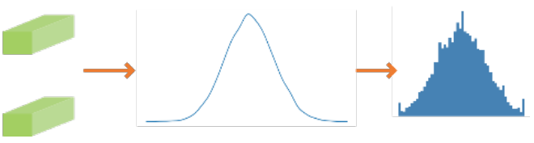
channel_wise=True 量化
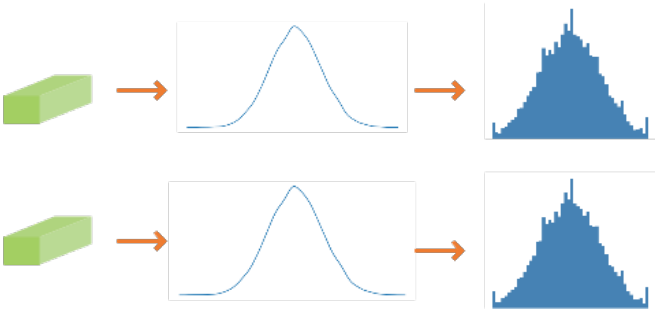
量化配置中ArqWeightFakeQuantize提供的参数channel_wise用来选择量化方式：
- channel_wise为False时，所有filter一起分析数据分布，进行量化，某一层的所有不同channel共用一个量化因子。
- channel_wise为True时，每个filter独立做数据分析，进行量化，同一层的每个channel有独立的量化因子。一般来说，每一个filter独立进行量化，channel_wise设为True，量化精度较高；如果每个filter的数据量比较少，量化效果会比较差，此时推荐channel_wise设为False。
注意：全连接层、平均下采样层Pooling（下采样方式为AVE，且非global pooling)和LSTM层没有channel，设置channel_wise为True时，会提示错误信息。
作用：该层权重量化配置。
表 1 ArqWeightFakeQuantize
ULQ数据量化算法
ULQ（Universal Linear Quantization）算法在训练过程中不断训练量化因子，以减少量化损失。该算法初始化时会对数值做量化（包含截断），对初始化敏感。该算法支持ULQ数据量化算法。
作用：该层数据量化配置。
表 1 UlqFakeQuantize
LUQ量化算法
默认支持luq mse算法，luq算法支持数据和权重量化算法。
作用：该层数据量化配置。
表 1 LuqActivationFakeQuantize
表 2 LuqWeightFakeQuantize
LNQ权重量化算法
4bit非均匀权重量化算法。
作用：该层权重量化配置。
表 1 LnqFakeQuantize
Fixed量化算法
FixedFakeQuantize分为数据和权重量化算法
表 1 FixedFakeQuantize 数据量化算法参数
表 2 FixedFakeQuantize 权重量化算法参数
示例：
{
"maxpool":{
"quant_enable":true,
"activation_quant_params":[
{
"quantizer":"FixedFakeQuantize",
"quantizer_args":{
"scale":0.0118393,
"zero_point":-128.0,
"num_bits":8,
}
}
]
},
"conv1":{
"quant_enable":true,
"activation_quant_params":[
{
"quantizer": "FixedFakeQuantize",
"quantizer_args": {
"scale": 0.0061145,
"zero_point": -128.0,
"num_bits": 8,
}
}
],
"weight_quant_params":{
"quantizer":"FixedFakeQuantize",
"quantizer_args":{
"scale":[0.010429775, 0.009767545],
"num_bits":8,
}
}
},
}
Learnable量化算法
LearnableFakeQuantize分为数据和权重量化算法，数据量化算法支持的observer有BrentoObserver、QuantileObserver和BruthSearchObserver，权重量化算法支持的observer有OCTAVObserver，暂不支持其它的observer，并且LearnableFakeQuantize支持的四个observer不支持其它的quantizer，请勿混用。Learnable量化算法仅支持量化重训。
表 1 LearnableActFakeQuantize数据量化算法参数
num_bits=4:BrentoObserver,BruthSearchObserver;num_bits=8:QuantileObserver |
|||||
表 2 LearnableWtFakeQuantize权重量化算法参数
示例：
{
"features_9_conv_2":{
"quant_enable":true,
"activation_quant_params":[
{
"quantizer":"LearnableFakeQuantize",
"quantizer_args":{
"num_bits":4,
"fixed_min":true,
"symmetric":false,
"observer":"BrentoObserver"
}
}
],
"weight_quant_params":{
"quantizer":"LearnableFakeQuantize",
"quantizer_args":{
"num_bits":4,
"channel_wise":true,
"channel_len":64,
"observer":"OCTAVObserver"
}
}
},
"flatten":{
"quant_enable":true,
"activation_quant_params":[
{
"quantizer":"LearnableFakeQuantize",
"quantizer_args":{
"num_bits":4,
"fixed_min":true,
"symmetric":false,
"observer":"BrentoObserver"
}
}
]
}
}
自定义量化算法
本版本对用户自定义量化算法完全开放，算法满足如下条件即可使用：
- 线性量化算法, 量化到torch.qint (quint不支持)
- 带有scale和zero_point属性
- 带有quant_min和quant_max属性(可选，不带时按照(-128, 127)处理)
自定义算法以包名发现，即时注册的方式引入，将算法类的完整包名配置到quantizer字段，将类需要的初始化属性配置到quantizer_args字段(属性中有复杂类型也用包名)，就能实时注册到AMCT中使用。
以torch.quantization.FakeQuantize为例，修改量化配置文件config.json或者简易量化配置文件(参考sample中的custom_quantize.yml)即可实现：
"conv1": {
"quant_enable": true,
"activation_quant_params": [
{
"quantizer": "torch.quantization.FakeQuantize",
"quantizer_args": {
"observer": "torch.quantization.PerChannelMinMaxObserver",
"quant_min": -128,
"quant_max": 127,
"dtype": "torch.qint8",
"qscheme": "torch.per_channel_symmetric",
"reduce_range": false
"ch_axis": 0
}
},
{
"quantizer": "torch.quantization.FakeQuantize",
"quantizer_args": {
"observer": "torch.quantization.MovingAverageMinMaxObserver",
"quant_min": -128,
"quant_max": 127,
"dtype": "torch.qint8",
"qscheme": "torch.per_tensor_affine",
"reduce_range": false
}
}
]
}
此特性具有过高的开放和灵活性，AMCT无法知道自定义算法内部的功能正确与否，推荐使用基于torch.quantization.FakeQuantizeBase拓展的算法子类。
工具实现的融合功能
当前该工具主要实现的融合功能包括：
- Conv2d+Batchnorm2d/SyncBatchnorm2d融合：在模型保存阶段进行融合成Conv2d算子。
- 量化层之间的融合比如：Dequant反量化和Quant量化算子会融合成ReQuant重量化算子。
量化误差分析
AMCT提供量化误差分析功能，可对模型进行单层量化敏感度分析和整体模型量化分析，通过可视化每层量化敏感度和每层数据分布，指出模型中存在的敏感层以及整体量化误差分布。
误差分析功能
本章介绍量化误差分析功能，我们提供四种方式帮助对模型进行误差分析，分别是layerwise_analyze、graphwise_analyze、statistical_analyze、single_op_analyze和analyze方式，建议先按照layerwise_analyze到analyze顺序分析使用。
-
layerwise_analyze：分析网络中单独的量化层对网络输出的影响情况，该方法分析的误差不是累计的，会遍历量化模型中的一层，并计算量化该层后模型的输出，每层量化的结果会最终可视化折线和表格包含在Sensitivity Analysis（敏感度分析）页面中，使用该方法会生成一个layerwise_analysis_report.html文件，直接从浏览器打开即可看到分析情况，接口使用可参考QuantAnalyzer。
图 1 layerwise_analyze 敏感度分析结果图

其中layer_name对应的是某算子输入的量化插层的名字，sensitive_metric的值反映该算子输入量化和权重量化（仅Conv2d、ConvTranspose2d和Linear有权重量化）对网络输出的影响，复制layer_name在quant.svg中搜索量化插层，该插层连接的下一个算子就是要量化的算子，该算子图节点第一行就是算子名，可以在简易量化配置yaml文件或quant.json中，用这个算子名字配置该算子的量化配置。
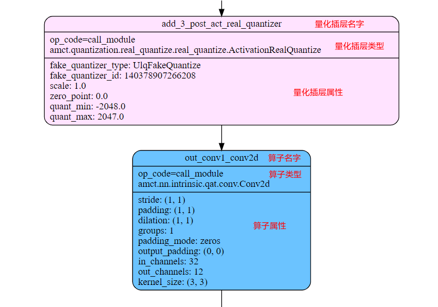
-
graphwise_analyze：分析网络中的每层的fakequant和realquant输出分别对浮点的余弦相似度情况。使用该方法会生成一个graphwise_analysis_report.html文件，直接从浏览器打开即可看到分析情况，接口使用可参考QuantAnalyzer。其中html文件包含以下页面：
Cosine Similarity（余弦相似度）页面，该页面包含两条曲线，fakequant和realquant分别对浮点的余弦相似度曲线。
-
statistical_analyze：遍历量化前后模型的每层输出，并统计每一层量化前后的输出以及权重的统计分布情况和可视化直方图，会在对应路径生成statistic.csv和statistic_analysis_report.html，推荐在使用graphwise_analyze时，需要查看输出层里面详细的值，可调用statistical_analyse 辅助分析，接口使用可参考QuantAnalyzer。
图 4 statistical_analyze对应量化前后模型每层输出csv
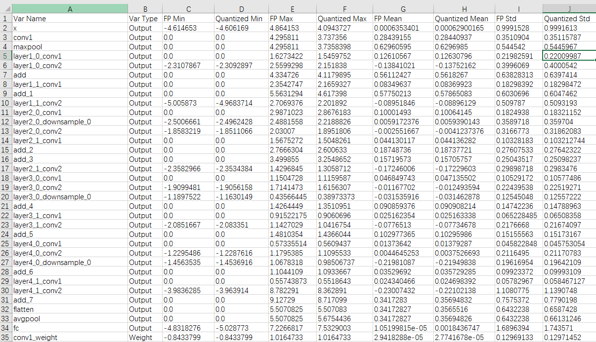
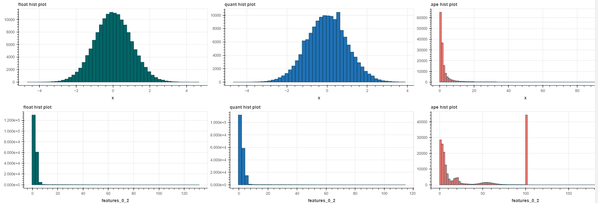
表 1 statistic.csv 量化前后权重和输出层的具体数据信息说明
表 2 statistic_analysis_report.html 参数说明
绝对误差百分比数据分布，计算公式：abs(quant_fp32 - fp32) / abs(fp32)，注意：超过200%被截断为200%。
-
single_op_analyze：分析网络中单算子量化对网络输出的影响情况，最终生成两个页面。
- Single Op quant With weight：分别量化带权重的单算子的数据、权重和数据权重同时量化对网络的影响，页面包含三种模式的余弦相似度的折线图和量化前后网络输出的余弦相似度（cos）、最大绝对误差（mae）和平均绝对百分比误差（mape:最大值为1）的表格。注意：matmul的第二路认为是权重，所以matmul的量化误差也在该页面中展示。
- Single Op Quant：每次只量化一个算子，查看单算子量化误差情况，如果该算子带权重，那么数据和权重同时量化。
-
analyze：量化误差分析总接口，分析网络中的整体量化误差情况，包含前三种误差分析，使用该方法会生成一个quant_analysis_report.html文件，直接从浏览器打开即可看到分析情况，接口使用可参考QuantAnalyzer。
- layerwise_analyze：分析网络中单独的量化层对网络输出的影响情况。
- graphwise_analyze：分析网络中的每层的量化输出对浮点的余弦相似度情况。
- statistical_analyze：分析统计每一层量化前后的输出以及权重的统计分布情况。
- single_op_analyze：分析单算子量化前后误差情况
注意：
目前量化误差分析功能仅适用于分类和检测网，输入数据建议使用预处理数据，否则误差分析可能不准确。
仅在Cosine Similarity（余弦相似度）页面引入了realquant，其他分析报告中的量化均为fakequant。

误差分析示例
以mobilenetv3_small网络为例，先使用layerwise_analyze得到单层量化误差的分析结果：
- 点击 Sensetive Analysis 页面，查看单层敏感度分析报告，报告分为折线图和对应数据表图，数据表图会有详细的名称和对应评估值。
-
在误差分析中，首先看敏感度分析的折线图：
折线图的x轴是量化的层名称，y轴是开启此层量化前后输出结果的评估值，该方法分析的误差不是累计的，会遍历量化模型中的一层，并计算量化该层后模型的输出。
如果存在某层相对其他层，值明显偏大，那可能此层量化影响结果，可能需要关闭此层量化层，再去评测精度。
在mobilenetv3_small网络中，图1 敏感度分析的折线图 features_0_2_post_act_real_quantizer层的值明显比其他层的大，所以可以尝试在对应层采用高精或者关闭量化，去评估精度，看精度是否有提升。
表 1 评估方式说明
进行余弦相似度算法比对出来的结果，范围：[-1,1]，比对的结果如果越接近1，表示两者的值越相近，越接近-1意味着两者的值越相反
使用的是KL散度（ KullbackLeiblerDivergence ）敏感度分析：
衡量两个概率分布之间的相似性，两个概率分布越相近，KL散度越小，取值范围是0到无穷大。KL 散度越小，真实分布与近似分布之间的匹配越好
-
在输出层和权重层的可视化直方图中，会统计每一层的输出以及参数的统计分布情况，直方分布图可观察更具体的数值分布，将更清晰地了解网络的量化情况，可以将关闭 features_0_2_post_act_real_quantizer层的量化模型再去调用layerwise_analyze和graphwise_analyze接口，看最终敏感度和整体量化误差分布是否趋于一致。
- 详细的使用方法见误差分析功能的使用介绍。

误差原因
浮点数据先量化（quantize）再反量化（dequantize）还原浮点数据的过程。
图 1 伪量化计算图（scale=11.76，zero_point=0）

如图1某些值(如 3.08/3.02 )在量化到 INT8 后，都被分配了相同的值36。当值(36)反量化(dequantize)回FP32时，会丢失一些精度，变得无法再区分，这种现象被称为量化误差 。
通过比较原始值（original）和反量化值（dequantized）之间的差值来计算这个误差，如图图2所示。

常规情况位宽越低，量化误差越大。
但低比特量化有一个明显的缺点，那就是有离群值（outlier）时不太好处理。
假设有一个向量，其值如图3所示。
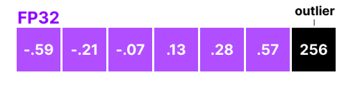
如果其中一个数值（value）远大于其他所有数值，该数值就可以被视作离群值（outlier）。 如果要量化这个向量的全部数值，那么所有较小的数值都将映射到相同的较低位表示，并因此失去它们的独特特性。

权重分布

误差原因：quant_params_recorded.txt中记录该层权重的scale为10.505216，从statistic.csv中记录该层权重的最小值为-12.089，最大值为7.722，从该层的直方图上可以看出，该层权重大部分值集中在0附近，而边缘值极少。
那么最小值经过量化：
-12.089 * 10.505216 = -126.06
clip(round(-126.06)，-128, 127) = -126
再经过反量化：
-126 / 10.505216 = -11.99404
量化值-11.99404和伪量化值误差很小。
但是0附近的浮点小数经过上述过程之后，比如0.1经过量化为0，再反量化之后仍然为0，这时候，绝大部分值存量化误差，导致掉点。
图1展示的为linear的权重，该算子为权重pertensor量化，只有一个scale，而conv2d和deconv可能为perchannel量化，每个通道对应一个scale，权重直方图和statistic.csv仅统计整个权重的范围。

图2为权重的某一通道的数据分布，最大值为0.9496，最小值为0.003，但大部分值都在0.04以下，scale为0.007477，最大值是最小值的300倍左右，8bit的量化范围在-128到127，量化域无法表示浮点较小值。从而导致量化误差。该数据的量化过程展示如下：
- 最大值0.9496，经过量化和反量化clip(round(0.9496 / 0.007477)) / 0.007477 = 0.949579，误差极小。
- 量化之后被round成0的最小值0.499，但是小于 0.499 * 0.007477 = 0.00373的值都被量化成0，导致量化误差。
解决方法：
- 在保证精度的情况下将，权重clip在大部分值所在的区域，减少边缘较大值存在。
- 微调浮点模型，通过一些训练track，比如权重正则化，避免权重过大，分布不均。
- QAT重训。
反量化溢出
数据高精时，数据量化系数的倒数会变小，反量化系数（dequant_scale）等于数据量化系数倒数乘以权重量化系数的倒数也会跟着变小。
- 定点bias类型为INT32，浮点bias除以反量化系数就有可能超出INT32的范围从而被截断导致量化误差。
- 反量化系数如果超过FLT_EPSILON（浮点小数能表示的最小值1.19209290 * 1e-7），会被截断在FLT_EPSILON。
解决方法：
- 数据高精位宽可以选择[9-15]bit，避免16bit可能出现的溢出。
- 权重量化配置使用pertensor量化（channel_wise: False），一般perchannel量化的精度较高。
- 当bias较大时提高权重量化配置的的eps（最小截断值）。
- 将下一个的算子的量化开关打开，反量化与下一个算子的量化将会变为重量化，从而降低溢出风险。
Transformer加速
简介
为了加速Transformer的模型，SVP NPU提供名为Picovision的Python增强包，该工具包提供以下主要功能和示例。
- 提供亲和当前硬件平台的算子和Backbone实现
- 和AMCT工具配合，在Transformer模型上提供无缝的模型压缩用户体验
- 网络加速和量化部署示例, 如SwinTransformer、MOTRv2等
安装
软件包
Picovision由一个收录算子和Backbone的Python包和一个Sample包组成。
表 1 Picovision软件包内容
_{version}_表示Picovision具体版本号。
安装
-
在Picovision软件包所在目录下执行如下命令进行安装。
-
若出现如下信息说明工具安装成功。
用户可以在pythonX.X.X软件包所在路径下（例如：$HOME/.local/lib/pythonX.X.X/site-packages）查看已经安装的Picovision，例如：
drwxr-xr-x 5 amct amct 4096 Mar 17 11:50 picovision/ drwxr-xr-x 2 amct amct 4096 Mar 17 11:50 picovision-{version}.dist-info/其中picovision即为Picovision所在安装目录。
picovision.nn.models
表 1 picovision.nn提供亲和硬件的算子
表 2 picovision.nn使用到的自定义算子
torch.ops.pico_ops提供的算子必须在import picovision后才能被识别。
picovision.models
表 1 picovision.models提供亲和硬件的开源模型block
picovision.models.swin_transformer_v2.SwinTransformerBlockV2 |
||
接口说明
create_quant_config_fx
功能说明：生成量化配置文件接口，根据图的结构找到所有可量化的层，自动生成量化配置文件，并将可量化层的量化配置信息写入文件。
函数原型：
参数说明：
返回值说明：无。
函数输出：输出一个calibration_config.json格式的量化配置文件（重新执行量化时，该接口输出的量化配置文件将会被覆盖）。
create_quant_model_fx
功能说明：接收create_quant_config_fx生成的量化配置文件，对模型进行量化，并生成原始模型和量化后模型的图结构，返回修改后的torch.fx.GraphModule静态量化模型。
函数原型：
参数说明：
返回值说明：返回修改后的torch.fx.GraphModule量化模型
save_quant_model_fx
功能说明：保存量化模型，将用户量化的模型保存为可以在SoC做推理的部署模型，并生成模型量化过程中的参数quant_param_record.txt。
函数原型：
save_quant_model_fx(model: torch.fx.GraphModule, save_path: str, input_data, onnx_export_setting = None)
参数说明：
返回值说明：无。
函数输出：
- 部署模型文件：ONNX格式的模型文件，模型名中包含deploy，经过ATC转换工具转换后可部署到在SoC。
- 浮点模型文件：ONNX格式的原始torch模型文件。
- 量化参数文件：记录每一层算子的量化参数的txt文件。
重新执行量化时，该接口输出的上述文件将会被覆盖。
enable_quantization
功能说明：量化模型状态开关，支持四种状态calibration、fake_quant、real_quant和原始float模型推理。
函数原型：
enable_quantization(model: torch.fx.GraphModule, calibration=False, fake_quant=False, real_quant=False)
参数说明：
- 浮点模式: 三个参数都为False，可用于训练/推理。
-
校准模式:
- 模式一：calibration为True, 其他为False，推荐用于量化校准。
- 模式二：calibration和fake_quant为True，其他为False，可用于量化重训前的预校准
-
伪量化模式：fake_quant为True, 其他为False，可用于训练/推理。
-
真量化模式: real_quant为True, 其他为False，可用于训练/推理。
返回值说明：无
函数输出：无
auto_mixed_precision_search
功能说明：在指定压缩率、模式下，根据图的结构找到所有支持混合精度量化的层（torch.nn.Conv2d、torch.nn.ConvTranspose2d和torch.nn.Linear（Hi3516CV610不支持）），自动生成混合精度量化策略，并将量化配置信息写入简易量化配置文件。
函数原型：
auto_mixed_precision_search(model: torch.nn.Module, input_data: torch.Tesnor, mixed_precision_config: Dict, save_path: str)
参数说明：
表 1 自动混合精度量化配置说明
'custom'：表示使用自定义压缩率模式生成混合精度简易量化配置文件。 'auto'：表示使用自适应压缩率模式生成混合精度简易量化配置文件。算法自动生成一个相对较优的压缩率，并基于此压缩率生成简易量化配置文件。模型首次进行混合精度量化，推荐先使用此模式得到一个相对较优的压缩率，后续可基于此压缩率，配置为custom模式继续调优。 |
|||
1. 混合精度的模型压缩率，在weights_compress_ratio 和 flops_compress_ratio 中，是按照权重8bit和计算量8bit为基准。
2. 模型的输入和输出支持torch.tensor 或者tuple<torch.tensor>或者list<torch.tensor>，请确保模型符合要求，否则混合精度生成量化配置文件会出错。
3. Hi3519DV500和Hi3516CV610混精策略差异说明：
- auto模式：
- Hi3519DV500：以压缩om大小为目标，其支持在a8w8、a8w4间搜索最优的混精配置。
- Hi3516CV610：以压缩flops为目标，其支持在a8w8、a8w4间搜索最优的混精配置。
- custom模式：
- Hi3519DV500：先压缩flops，om大小不满足指定压缩率时再压缩om大小；其支持在a8w8、a8w4、a4w4间搜索满足压缩率的最优精度混精配置。
- Hi3516CV610：先压缩flops，om大小不满足指定压缩率时再压缩om大小；当flops压缩率在[1.0，2.0]在a8w8、a8w4间搜索最优精度混精配置；当flops压缩率在（2.0，4.0]在a8w8、a8w4、a4w4间最优精度混精配置。
返回值说明：无
函数输出：将混合精度量化生成的bit位宽配置信息写入函数参数指定的简易量化配置文件
AdvancedPostTrainingQuantizer
功能说明：AMCT提供APTQ（AdvancedPostTrainingQuantizer高级离线量化）方法进行推理，替换原有的PTQ推理，在不影响原有的量化插层和bit设置策略下，提供一个可学习的量化参数方法，对推理后的量化参数进行优化后固定，最终输出fx.GraphModule模型。
函数原型：
aptq_quantizer = amct.AdvancedPostTrainingQuantizer()
optimized_model= aptq_quantizer.optimize(model: torch.fx.GraphModule, inputs, iters：int, keep_gpu: boolean)
参数说明：
模型的输入推理数据，用于进行aptq推理的输入数据，可以输入单Tensor，包含多组tensors的tuple，或者是torch.utils.data.DataLoader |
必须输入，数据类型：torch.Tensor / tuple(torch.Tensor) / torch.utils.data.DataLoader |
||
返回值说明：
optimized_model：torch.fx.GraphModule （经过高级离线量化后生成的fx模型）
为了更好的控制优化过程，APTQ提供相关参数配置，在一般情形，这些超参不需要过多修改。在某些精度损失异常的场景，可以通过调整超参来定位和尝试解决问题，APTQ Config参数配置说明可参考参数配置说明
以修改APTQ config的batch_size 为示例：
enable_dump
功能说明：调用此函数，该函数会把下一次量化模型推理过程每一层的输出保存为一个文件，有效期仅一次forword。
函数原型：
参数说明：
返回值说明：无。
函数输出：模型每一层输出的值保存为一个文件。
restore_quant_model_fx
功能说明：使用量化模型的config.json和量化模型保存的权重文件pt，将用户未量化的模型重新加载为量化模型
函数原型：
restore_quant_model_fx(config_file: str, model: torch.nn.Module, pth_file: str, state_dict_name: str = None)
返回值说明：量化模型。
QuantAnalyzer
功能说明：对pytorch浮点模型或amct量化模型进行量化误差分析，通过分析网络中的整体量化误差情况、单层量化误差情况，生成误差分析报告和统计分布文件。
函数原型：
quant_analyzer = amct.QuantAnalyzer(model: torch.nn.Module, input_data: Union[torch.Tensor, Tuple, List], save_path: str)
## quant_analyzer.layerwise_analyze() # 分析网络中单独的量化层对网络输出的影响情况
## quant_analyzer.graphwise_analyze() # 分析网络中的每层的量化输出对浮点的余弦相似度误差情况
## quant_analyzer.statistical_analyze() # 统计每一层量化前后的输出以及权重的统计分布情况
## quant_analyzer.single_op_analyze() # 分析网络中的单算子量化误差情况
quant_analyzer.analyze() # 总分析接口，包含layerwise_analyze、graphwise_analyze、statistical_analyze和single_op_analyze结果
参数说明：
数据类型：torch.Tensor / tuple<torch.Tensor> / List<torch.Tensor> |
|||
- graphwise_analyze 每层的量化输出对浮点的余弦相似度分析输出文件：graphwise_analysis_report.html 包含 Cosine Similarity（余弦相似度）页面。
- layerwise_analyze 网络单层量化误差分析输出文件：layerwise_analysis_report.html 包含 Sensitivity Analysis（敏感度分析）页面。
- statistical_analyze 量化前后数据统计分布输出文件：statistic.csv 统计分布文件、Output Hist Plot（每层输出直方图）页面和Weight Hist Plot（权重输出直方图）页面。
- single_op_analyze 单算子量化前后误差分析输出文件：single_op_quant_analysis_report.html包含Single Op quant With weight 带权重的单算子量化误差分析页面和Single Op Quant 单算子量化误差分析页面。
- analyze 精度误差分析总接口输出文件：
- quant_analysis_report.html 包含Sensitivity Analysis（敏感度分析）页面、Cosine Similarity（余弦相似度）页面、Output Hist Plot（每层输出直方图）页面、Weight Hist Plot（权重输出直方图）页面、Single Op quant With weight 带权重的单算子量化误差分析页面和Single Op Quant 单算子量化误差分析页面。
- statistic.csv 统计分布文件。
1. 若模型输出为多个tensor，在计算损失时，若指标为余弦相似度，则分别计算各输出的余弦相似度以量化损失，并选取把最小值作为模型损失值；对于非余弦相似度的损失计算时，把最大值作为模型指标，比如敏感度。但无法指定某路输出进行量化分析。
2. 如果模型的输出不是list(tensor1,tensor2)或tuple(tensor1,tensor2)或tensor格式输出时，则无法进行量化分析。
解决以上问题，可以通过对量化分析工具打patch的方式进行自定义。示例如下：
from hotwheels.amct_pytorch.fx.analyzer import quant_analyzer from typing import Union, Tuple, List @torch.no_grad() def custom_model_forward(model: any, input_data: Union[torch.Tensor, Tuple, List]): if isinstance(input_data, tuple): out = model(*input_data) else: out = model(input_data) # 针对某路模型输出进行量化分析。 # out is dict return out.model_output # out is tuple list # return out[1] setattr(quant_analyzer, '_model_forward', custom_model_forward) quant_analyzer = amct.QuantAnalyzer(model: torch.nn.Module, input_data: Union[torch.Tensor, Tuple, List], save_path: str) quant_analyzer.analyze()
静态图量化限制
不支持torch的自动混精模式
AMCT基于模型中float32类型的数据进行量化，如果使用torch的自动混精模式（amp），模型的中的数据类型转变为float16，会导致精度损失。
不支持动态控制流
由于torch的静态图机制不支持动态控制流，因此AMCT工具也不支持动态控制流，关于动态控制流的约束和规避方法请参考fx.symbolic_trace异常场景汇总。
动态图版本说明
Hi3516CV610不支持动态图版本。
amct动态图版本的功能和API在静态图版本中仍能够正常使用。动态图版本的模型压缩量化工具在该场景下需借助通过pytorch导出onnx的方式构建图结构，并添加拓展标记层记录层名，以此建立pytorch和onnx层名的映射。量化工具通过该方式，实现模型的量化配置的生成、量化层的插入和量化参数的保存。但是，由于pytorch与onnx的算子映射不能一一对应，例如pytorch中的GlobalAvgPooling算子，在onnx中会被拆分为Pad+Pool的算子组合，因此，动态图版本中的量化策略需要对上述转换的场景进行特殊适配。此外，动态图版本中用户的量化model如果存在function类型算子，如torch.nn.functional.sigmoid，需要手动替换成module实现，以保证量化层名的标记。上述特点均易导致工具代码的灵活性和扩展性差，用户使用不方便，不易维护等问题。
接口说明
训练后量化
create_quant_config
create_quant_config
功能说明：训练后量化接口，根据图的结构找到所有可量化的层，自动生成量化配置文件，并将可量化层的量化配置信息写入文件。
函数原型：
create_quant_config(config_file, model, input_data, skip_layers=None, batch_num=1, activation_offset=True, config_defination=None)
参数说明：
|
|||
基于calibration_config_pytorch.proto文件生成的简易量化配置文件quant.cfg，calibration_config_pytorch.proto文件所在路径为：AMCT安装目录/amct_pytorch/proto/calibration_config_pytorch.proto。 calibration_config_pytorch.proto文件参数解释以及生成的quant.cfg简易量化配置文件样例请参见训练后量化简易配置文件说明。 |
使用约束：当取值为None时，使用输入参数生成配置文件；否则，忽略输入的其他量化参数（skip_layers，batch_num，activation_offset），根据简易量化配置文件参数config_defination生成json格式的配置文件。 |
返回值说明：无。
函数输出：输出一个json格式的量化配置文件（重新执行量化时，该接口输出的量化配置文件将会被覆盖）。
{
"version":1,
"batch_num":2,
"activation_offset":true,
"do_fusion":true,
"skip_fusion_layers":[],
"conv1":{
"quant_enable":true,
"activation_quant_params":[
{
"max_percentile":0.999999,
"min_percentile":0.999999,
"search_range":[
0.7,
1.3
],
"search_step":0.01
}
],
"weight_quant_params":{
"channel_wise":true
}
},
"layer1.0.conv1":{
"quant_enable":true,
"activation_quant_params":[
{
"max_percentile":0.999999,
"min_percentile":0.999999,
"search_range":[
0.7,
1.3
],
"search_step":0.01
}
调用示例：
import hotwheels.amct_pytorch as amct
## 建立待量化的网络图结构
model = build_model()
model.load_state_dict(torch.load(state_dict_path))
input_data = tuple([torch.randn(input_shape)])
model.eval()
## 生成量化配置文件
amct.create_quant_config(config_file="./configs/config.json",
model=model,
input_data=input_data,
skip_layers=None,
batch_num=1,
activation_offset=True)
quantize_model
功能说明：训练后量化接口，将输入的待量化的图结构按照给定的量化配置文件进行量化处理，在传入的图结构中插入量化相关的算子，生成量化因子记录文件record_file，返回修改后的torch.nn.module校准模型。
函数原型：
calibration_torch_model = quantize_model(config_file, modfied_onnx_file, record_file, model, input_data, input_names=None, output_names=None, dynamic_axes=None)
参数说明：
对模型输入输出动态轴的指定，例如对于输入inputs（NCHW），N、H、W为不确定大小，输出outputs（NL），N为不确定大小，则{"inputs": [0,2,3], "outputs": [0]} |
数据类型：dict<string, dict<python:int, string>> or dict<string, list(int)> |
||
返回值说明：
返回修改后的torch.nn.module校准模型和原始图结构。
调用示例：
import hotwheels.amct_pytorch as amct
## 建立待量化的网络图结构
model = build_model()
model.load_state_dict(torch.load(state_dict_path))
input_data = tuple([torch.randn(input_shape)])
scale_offset_record_file = os.path.join(TMP, 'scale_offset_record.txt')
modified_model = os.path.join(TMP, 'modified_model.onnx')
## 插入量化API
calibration_torch_model = amct.quantize_model(config_json_file,
modified_model,
scale_offset_record_file,
model,
input_data,
input_names=['input'],
output_names=['output'],
dynamic_axes={'input':{0: 'batch_size'},
'output':{0: 'batch_size'}})
save_model
功能说明：训练后量化接口，根据量化因子记录文件record_file将用户待量化的模型保存为可以在ONNX Runtime环境进行量化精度仿真的精度仿真模型，和可以在SoC做推理的部署模型。
约束说明：
- 在网络推理的batch数目达到batch_num后，再调用该接口，否则量化因子不正确，量化结果不正确。
- 该接口只接收quantize_model接口产生的onnx类型模型文件。
- 该接口需要输入量化因子记录文件，量化因子记录文件在quantize_model阶段生成，在模型推理阶段填充有效值。
函数原型：
参数说明：
返回值说明：无。
函数输出：
- 精度仿真模型文件：ONNX格式的模型文件，模型名中包含fake_quant，可以在ONNX Runtime环境进行精度仿真。
- 部署模型文件：ONNX格式的模型文件，模型名中包含deploy，经过ATC转换工具转换后可部署到在SoC。
重新执行量化时，该接口输出的上述文件将会被覆盖。
调用示例：
import hotwheels.amct_pytorch as amct
## 进行网络推理，期间完成量化
for i in batch_num:
output = calibration_model(input_batch)
## 插入API，将量化的模型存为onnx文件
amct.save_model(modfied_onnx_file="./tmp/modified_model.onnx",
record_file=”./tmp/scale_offset_record.txt”,
save_path="./results/model",
calibration_torch_model)
update_bn_status
功能说明：该接口只在4bit calibration算法时调用，用于更新BN层的权重为可学习状态或不可学习状态。
函数原型：
参数说明：
返回值说明：无。
调用示例：
import hotwheels.amct_pytorch as amct
## 建立待量化的网络图结构
modified_model = os.path.join(TMP, 'modified_model.onnx')
## 插入API，修改BN为可学习状态
amct.update_bn_status(calibration_model, False)
量化感知训练
create_quant_retrain_config
功能说明：量化感知训练接口，根据图的结构找到所有可量化的层，自动生成量化配置文件，并将可量化层的量化配置信息写入配置文件。
函数原型：
参数说明：
|
基于retrain_config_pytorch.proto文件生成的简易配置文件quant.cfg， retrain_config_pytorch.proto文件所在路径为：AMCT安装目录/amct_pytorch/proto/retrain_config_pytorch.proto。 retrain_config_pytorch.proto文件参数解释以及生成的quant.cfg简易量化配置文件样例请参见“量化感知训练简易配置文件说明”。 |
使用约束：当取值为None时，使用输入参数生成配置文件；否则，根据量化感知训练简易配置文件参数config_defination生成json格式的配置文件。 |
返回值说明：无。
函数输出：输出一个json格式的量化感知训练配置文件（重新执行量化感知训练时，该接口输出的配置文件将会被覆盖）。样例如下：
{
"version":1,
"batch_num":1,
"conv1":{
"retrain_enable":true,
"retrain_data_config":[
{
"algo":"luq_quantize",
"num_bits":8
}
],
"retrain_weight_config":{
"algo":"arq_retrain",
"num_bits":8,
"channel_wise":true
}
},
"layer1.0.conv1":{
"retrain_enable":true,
"retrain_data_config":[
{
"algo":"luq_quantize",
"num_bits":8
}
],
"retrain_weight_config":{
"algo":"lnq_retrain",
"num_bits":4,
"clip_max":3.0,
"cluster_freq":1200,
"max_iteration":1000,
"min_distance":0.0001,
"channel_wise":false
}
},
"layer1.0.eltwise_add":{
"retrain_enable":true,
"retrain_data_config":[
{
"algo":"luq_quantize",
"num_bits":8
},
{
"algo":"luq_quantize",
"num_bits":8
}
]
},
"fc":{
"retrain_enable":true,
"retrain_data_config":[
{
"algo":"luq_quantize",
"num_bits":8
}
],
"retrain_weight_config":{
"algo":"arq_retrain",
"num_bits":8,
"channel_wise":false
}
}
调用示例：
import hotwheels.amct_pytorch as amct
## 建立待量化的网络图结构
model = build_model()
model.load_state_dict(torch.load(state_dict_path))
input_data = tuple([torch.randn(input_shape)])
## 生成量化配置文件
amct.create_quant_retrain_config(config_file="./configs/config.json",
model=model,
input_data=input_data)
create_quant_retrain_model
功能说明：量化感知训练接口，将输入的待量化的图结构按照给定的量化配置文件进行量化处理，在传入的图结构中插入量化相关的算子（数据和权重的量化感知训练层以及找N的层），生成量化因子记录文件record_file，返回修改后可用于量化感知训练的torch.nn.module模型。
函数原型：
参数说明：
返回值说明：量化感知训练的模型。
函数输出：无。
调用示例：
import hotwheels.amct_pytorch as amct
## 建立待进行量化感知训练的网络图结构
model = build_model()
model.load_state_dict(torch.load(state_dict_path))
input_data = tuple([torch.randn(input_shape)])
scale_offset_record_file = os.path.join(TMP, 'scale_offset_record.txt')
## 插入量化API
quant_retrain_model = amct.create_quant_retrain_model(
config_json_file,
model,
scale_offset_record_file,
input_data)
restore_quant_retrain_model
功能说明：量化感知训练接口，将输入的待量化的图结构按照给定的量化感知训练配置文件进行量化处理，在传入的图结构中插入量化感知训练相关的算子（数据和权重的量化感知训练层以及找N的层），生成量化因子记录文件record_file，加载训练过程中保存的checkpoint权重参数，返回修改后的torch.nn.module量化感知训练模型。
函数原型：
quant_retrain_model = restore_quant_retrain_model (config_file, model, record_file, input_data, pth_file, state_dict_name=None)
参数说明：
|
使用约束：该接口输入的config.json必须和create_quant_retrain_model接口输入的config.json一致。 |
|||
返回值说明：量化感知训练的模型。
函数输出：无。
调用示例：
import hotwheels.amct_pytorch as amct
## 建立待量化的网络图结构
model = build_model()
input_data = tuple([torch.randn(input_shape)])
scale_offset_record_file = os.path.join(TMP, 'scale_offset_record.txt')
## 插入量化API
quant_retrain_model = amct.restore_quant_retrain_model(
config_json_file,
model,
scale_offset_record_file,
input_data,
pth_file)
save_quant_retrain_model
功能说明：量化感知训练接口，根据用户最终的重训练好的模型，生成最终量化精度仿真模型以及量化部署模型。
函数原型：
save_quant_retrain_model (config_file, model, record_file, save_path, input_data, input_names=None, output_names=None, dynamic_axes=None)
参数说明：
对模型输入输出动态轴的指定，例如对于输入inputs（NCHW），N、H、W为不确定大小，输出outputs（NL），N为不确定大小，则 { "inputs": [0,2,3], "outputs": [0]} |
数据类型：dict<string, dict<python:int, string>> or dict<string, list(int)> |
返回值说明：无。
函数输出：
- 精度仿真模型文件：模型名中包含fake_quant，该模型可以在ONNX Runtime环境进行精度仿真。
- 部署模型文件：模型名中包含deploy，经过ATC转换工具转换后可部署到在SoC。
重新执行量化感知训练时，该接口输出的上述文件将会被覆盖。
调用示例：
import hotwheels.amct_pytorch as amct
## 建立待量化的网络图结构
model = build_model()
model.load_state_dict(torch.load(state_dict_path))
input_data = tuple([torch.randn(input_shape)])
## 训练量化retrain模型，训练量化因子
train_model(quant_retrain_model, input_batch)
## 推理量化retrain模型，导出量化因子
infer_model(quant_retrain_model, input_batch)
## 插入量化API，将量化感知训练的模型存为onnx文件
amct.save_quant_retrain_model(
config_json_file,
model,
scale_offset_record_file,
input_data,
input_names=['input'],
output_names=['output'],
dynamic_axes={'input':{0: 'batch_size'},
'output':{0: 'batch_size'}})
1. 多GPU训练时，由于保存模型的操作涉及到写文件等操作，请务必在主进程调用save_quant_retrain_model接口，防止出现写文件冲突。
调用示例：
def is_master_proc(num_gpus=8): """ Determines if the current process is the master process. """ if torch.distributed.is_available() and torch.distributed.is_initialized(): return dist.get_rank() % num_gpus == 0 else: return True if is_master_proc(): amct.save_quant_retrain_model(...)
1. optimizer的构建需使用amct添加量化模块之后的model，否则量化模块中的可学习参数不会更新，例如：
动态图版本FAQ
AMCT Pytorch量化约束说明
-
数据类型约束
NN层数据支持INT8、INT16，权重支持INT8、INT4；
非NN层数据支持INT8、INT16、FP16
-
网络结构约束
AMCT针对不同结构的模型量化过程中，会结合模型和生成的量化配置文件对量化进行前置校验，以判断用户模型的当前量化状态是否满足后续量化流程。
对于校验的详情，包括不限于以下若干场景：
-
场景1：量化层数量校验
对于生成的量化配置文件，如果其中不包含任何需要量化的层，校验会抛出异常：” No quant enable layer in quant config file, please check the quant config file.”。例如，在config.json中，包含的层 quant_enable均为false
{ "version":1, "batch_num":2, "activation_offset":true, "do_fusion":true, "skip_fusion_layers":[], "update_bn":false, "add_1":{ "quant_enable":false, "activation_quant_params":[ { "num_bits":8, "max_percentile":0.999999, "min_percentile":0.999999, "search_range":[ 0.7, 1.3 ], "search_step":0.01 }, { "num_bits":8, "max_percentile":0.999999, "min_percentile":0.999999, "search_range":[ 0.7, 1.3 ], "search_step":0.01 } ] } } -
场景2：一出多算子节点输出量化一致性校验
对于一出多算子，AMCT要求其多路输出的量化参数必须一致，否则校验拦截，提示形如：”Outputs {}(onnx name: {}) and {}(onnx name: {}) of layer {}(onnx name: {}) should have consistent”。例如，模型onnx拓扑如下：
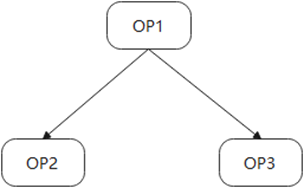
其中，OP1存在两路输出，分别对应OP2和OP3的其中一路输入。在这种情况下，OP2和OP3的对应路的输入量化参数需要保持一致。
如下量化配置config.json文件内容，红框中的两个参数需相等。
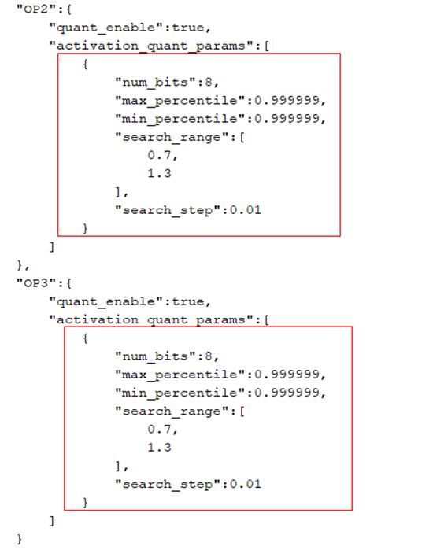
-
场景3：无指令层前后量化参数一致性校验
针对无指令层（没有计算，只有shape相关操作的数据传输层）算子（'Concat', 'Split', 'Reshape', 'Flatten', 'Slice', 'Transpose', 'Tile', 'Squeeze'等），其输入的量化参数应与下一层节点的输入量化参数保持一致，否则校验报错：” Layer {} should have consistent {} with no command layer {}”。例如，如下图所示模型结构：
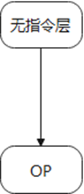
其中，OP为无指令层关联的下一层算子节点。
两个层的输入量化参数需保持一致，无指令层处于尾层的场景除外（该场景跳过校验）
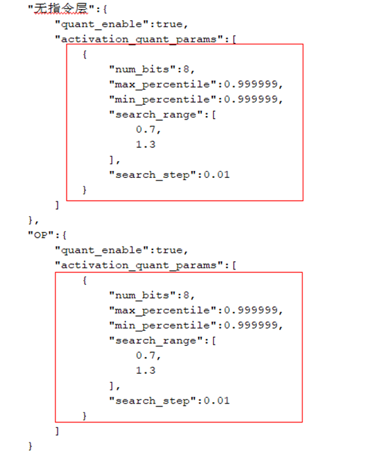
-
场景4：CUBE算子量化校验
如'Conv', 'Gemm', 'ConvTranspose', 'MaxPool', 'AveragePool', 'GlobalMaxPool', 'GlobalAveragePool' 的于CUBE单元上计算的算子必须量化，否则校验报错：” Layer {} must be quantized as it is an operation calculated on CUBE”。
对于生成的config.json，其量化参数内容会被解析以确定待量化的层（quant_layers），quant_layers会统计config.json中存在参数且quant_enable字段为True的层。如果模型中CUBE类型算子不在 quant_layers 中，会触发校验异常。
-
如何适配拓展层
当前小型化工具仅支持pytorch官方的算子的量化，也就是支持支持量化的算子列表中罗列的算子，如果用户基于这些算子做了定制化适配，小型化工具就无法识别，如图1所示。

这样的模型，小型化无法识别到模型中带有Conv层，需要将卷积和padding实现放到模型的forward方法中，如图2所示。

retrain场景，重复使用的层需多次定义
retrain场景，对于不带权重重复使用的层，需要根据使用次数在模型init方法中定义相应次数。原始模型如图1。

将加法和cat运算全部替换为amct_pytorch拓展算子，且加法按使用次数定义，如图2所示。
图 2 替换加法和cat运算为amct_pytorch的拓展算子

如果网络中存在多轮循环调用相同层的场景，如图3所示：

需要在__init__方法中按照使用次数定义Eltwise module，由于出现的两轮循环，其命名可以带上每轮循环对应的编号，如图4所示。

chunk算子替换成split算子
当前1.10.2版本的pytorch，指定onnx opset version为13进行pytorch到onnx的算子转换时，torch.chunk算子会变成小算子组合，这使得量化配置及量化参数映射流程极其复杂。此时需要用户手动将chunk算子替换为split算子。torch.chunk算子的含义是将tensor拆分成n块，torch.split算子的含义是将tensor拆分成大小为n的多块。经过替换后的模型，先进行一轮数据forward，确保所有split算子的chunk属性被初始化，再进行模型修改和forward。
图 1 Shufflenet中原始InvertedResidual定义

图 2 chunk修改为split定义后的InvertedResidual定义

拓展单输入单输出module量化
- 对于单输入单输出且有module表示的算子，不在支持量化的算子列表中，可以手动进行拓展，打开site-packages/hotwheels/amct_pytorch/capacity/capacity_config.csv，在NO_WEIGHT_QUANT_TYPES增加要拓展的pytorch层类型，NO_WEIGHT_QUANT_ONNX_TYPES中增加该层转换到onnx对应的层类型。例如，客户想要增加torch.nn.XLayer的量化，可以将‘Xlayer’添加到NO_WEIGHT_QUANT_TYPES列表末尾，并用逗号分隔，再将其在opset_version为13下转为onnx对应的算子类型ONNX_XLayer添加到NO_WEIGHT_QUANT_ONNX_TYPES列表末尾，并用逗号分隔。
- 对于单输入单输出且无module表示的算子，可参考site-packages/hotwheels/amct_pytorch/custom_op/max/max.py的拓展方式，基于CustomModuleBase拓展对应算子，并将其按照第1条的描述加入到支持量化的算子列表中。
动态图附录
训练后量化简易配置文件说明
calibration_config_pytorch.proto文件参数说明如表1所示。
表 1 calibration_config_pytorch.proto参数说明
通用的量化配置，若某层未被override_layer_types或者override_layer_configs重写，则使用该配置。 |
||||
debug场景，模型转换时会生成一个以.om.json为后缀的文件，其中会包含各层输入的量化位宽信息，可以用这个文件进行配置重新生成config.json进行校准，当前仅支持eltwise_add层的处理。 |
||||
基于该文件构造的均匀量化简易配置文件quant.cfg样例如下所示：
## global quantize parameter
batch_num : 2
activation_offset : true
do_fusion: true
skip_fusion_layers : "layer1.1.conv2"
update_bn: true
bn_update_config: {
bn_momentum : 0.1
bn_update_iterations : 30
}
om_config : {
mapping_file : "./retrain_conf/inst.om.json"
}
common_config : {
snq_quantize : {
channel_wise : true
max_iteration : 1000
min_distance : 1e-10
init_algo: 'uniform'
num_bits: 4
}
ifmr_quantize : {
search_range_start : 0.7
search_range_end : 1.3
search_step : 0.01
max_percentile : 0.999999
min_percentile : 0.999999
num_bits: 12
}
}
override_layer_types : {
layer_type : "Gemm"
calibration_config : {
arq_quantize : {
channel_wise : false
}
ifmr_quantize : {
search_range_start : 0.8
search_range_end : 1.2
search_step : 0.02
max_percentile : 0.999999
min_percentile : 0.999999
num_bits: 12
}
}
}
override_layer_configs : {
layer_name :"layer1.2.conv2"
calibration_config : {
arq_quantize : {
channel_wise : true
num_bits: 8
}
ifmr_quantize : {
search_range_start : 0.8
search_range_end : 1.2
search_step : 0.02
max_percentile : 0.999999
min_percentile : 0.999999
量化感知训练简易配置文件说明
retrain_config_pytorch.proto文件参数说明如表1所示。
表 1 retrain_config_pytorch.proto参数说明
debug场景，模型转换时会生成一个以.om.json为后缀的文件，其中会包含各层输入的量化位宽信息，可以用这个文件进行配置重新生成config.json进行校准，当前仅支持eltwise_add层的处理。 |
||||
基于该文件构造的量化感知训练简易配置文件quant.cfg样例如下所示：
数据ulq_retrain，权重arq_retrain
## global quantize parameter
retrain_data_quant_config: {
luq_retrain: {
num_bits: 8
}
}
om_config : {
mapping_file : "./retrain_conf/inst.om.json"
}
override_layer_types : {
layer_type: "Gemm"
retrain_weight_quant_config: {
lnq_retrain: {
channel_wise: false
num_bits:4
clip_max:3.0
cluster_freq:1200
}
}
}
override_layer_configs : {
layer_name: "Conv"
retrain_data_quant_config: {
ulq_quantize: {
clip_max_min: {
clip_max: 3.0
clip_min: -3.0
}
}
}
retrain_weight_quant_config: {
arq_retrain: {
channel_wise: true
}
}
}
FAQ
-
ModuleNotFoundError: No module named 'wheel' or No module named 'torch'
-
libcudart.so.*: cannot open shared object file: No such file or directory
fx.symbolic_trace异常场景汇总
torch.fx 符号跟踪 API 的限制
torch.fx 符号跟踪的局限性：https://pytorch.org/docs/stable/fx.html#limitations-of-symbolic-tracing
1. 被wrap的自定义函数必须要接收一个在线的输入，这个在线输入不管有没有被用到，都要被传入自定义函数。
2. 被wrap的自定义函数要模型前面前进行初始化，以便被torch.fx检测到。
3. 如果@torch.fx.wrap没有生效，可以采用torch.fx.wrap('my_custom_function')的方式.
4. 如果两种方式都不生效，请排查一下wrap的函数是否在模型初始化前被初始化，尽量写在模型定义代码上面。
torch.fx不支持动态控制流
-
动态控制流程
条件可能取决于某些输入值的循环或 if-else 语句。它只能跟踪一个执行路径，所有其他未跟踪的分支将被忽略。例如，跟踪简单函数时，将失败并显示 TraceError ：“符号跟踪变量不能用作控制流的输入”：
def func_to_trace(x): if x.sum() > 0: return torch.relu(x) else: return torch.neg(x) traced = torch.fx.symbolic_trace(func_to_trace) """ <...> File "dyn.py", line 6, in func_to_trace if x.sum() > 0: File "pytorch/torch/fx/proxy.py", line 155, in __bool__ return self.tracer.to_bool(self) File "pytorch/torch/fx/proxy.py", line 85, in to_bool raise TraceError('symbolically traced variables cannot be used as inputs to control flow')torch.fx.proxy.TraceError: symbolically traced variables cannot be used as inputs to control flow"""if语句的条件依赖于x.sum()的值，而 又依赖于x函数输入的值。由于x可以更改（即，如果您将新的输入张量传递给跟踪函数），这就是_动态控制流_。回溯遍历您的代码以向您展示这种情况发生的位置。
-
静态控制流程
另一方面，支持所谓的_静态控制流。_静态控制流是循环或if语句，其值不能在调用之间更改。通常，在 pytorch 程序中，此控制流的出现是为了根据超参数对模型架构做出代码决策。作为一个具体的例子：
import torch import torch.fx class MyModule(torch.nn.Module): def __init__(self, do_activation : bool = False): super().__init__() self.do_activation = do_activation self.linear = torch.nn.Linear(512, 512) def forward(self, x): x = self.linear(x) # This if-statement is so-called static control flow. # Its condition does not depend on any input values if self.do_activation: x = torch.relu(x) return x without_activation = MyModule(do_activation=False) with_activation = MyModule(do_activation=True) traced_without_activation = torch.fx.symbolic_trace(without_activation) print(traced_without_activation.code) """def forward(self, x): linear_1 = self.linear(x); x = None return linear_1""" traced_with_activation = torch.fx.symbolic_trace(with_activation) print(traced_with_activation.code) """import torch def forward(self, x): linear_1 = self.linear(x); x = None relu_1 = torch.relu(linear_1); linear_1 = None return relu_1"""if self.do_activation不依赖于任何函数输入，因此它是静态的。do_activation可以被认为是一个超参数。
Tracer使用类自定义跟踪
该类Tracer是实现symbolic_trace. 跟踪的行为可以通过子类化 Tracer 来定制，
叶模块是在符号跟踪中显示为调用而不是被跟踪的模块。默认的叶模块集是标准torch.nn模块实例集。例如：
叶模块集可以通过重写来定制 Tracer.is_leaf_module()。
如下所示：
amct内部实现了自定义Tracer，把amct标准torch.nn模块实例集和自定义的nn作为叶子节点。
class CustomTracer(torch.fx.Tracer):
def is_leaf_module(self, m: torch.nn.Module, module_qualified_name: str) -> bool:
if m.__module__.startswith('torch.nn') and not isinstance(m, torch.nn.Sequential):
return True
elif m.__module__.startswith('hotwheels.amct_pytorch.nn'):
return True
else:
return False
## Let's use this custom tracer to trace through this module
class MyModule(torch.nn.Module):
def forward(self, x):
return torch.relu(x) + torch.ones(3, 4)
mod = MyModule()
traced_graph = CustomTracer().trace(mod)
## trace() returns a Graph. Let's wrap it up in a
## GraphModule to make it runnable
traced = torch.fx.GraphModule(mod, traced_graph)
非torch函数不可追踪
FX__torch_function__用作拦截调用的机制（有关此的更多信息，请参阅技术概述）。一些函数，例如内置的 Python 函数或math模块中的函数，未包含在中 __torch_function__，但我们仍然希望在符号跟踪中捕获它们。例如：
import torch.fx
from math import sqrt
def normalize(x):
"""
Normalize `x` by the size of the batch dimension
"""
return x / sqrt(len(x))
## It's valid Python code
normalize(torch.rand(3, 4))
traced = torch.fx.symbolic_trace(normalize)
"""
<...>
File "sqrt.py", line 9, in normalize
return x / sqrt(len(x))
File "pytorch/torch/fx/proxy.py", line 161, in __len__
raise RuntimeError("'len' is not supported in symbolic tracing by default. If you want "
RuntimeError: 'len' is not supported in symbolic tracing by default. If you want this call to be recorded, please call torch.fx.wrap('len') at module scope
"""
该错误告诉我们不支持内置函数。我们可以将这样的函数作为使用wrap() API 的直接调用记录在跟踪中 ：
torch.fx.wrap('len')
torch.fx.wrap('sqrt')
traced = torch.fx.symbolic_trace(normalize)
print(traced.code)
"""
import math
def forward(self, x):
len_1 = len(x)
sqrt_1 = math.sqrt(len_1); len_1 = None
truediv = x / sqrt_1; x = sqrt_1 = None
return truediv
"""
张量构造函数不可追踪
def f(x):
return torch.arange(x.shape[0], device=x.device)
torch.fx.symbolic_trace(f)
Error traceback:
return torch.arange(x.shape[0], device=x.device)
TypeError: arange() received an invalid combination of arguments - got (Proxy, device=Attribute), but expected one of:
* (Number end, *, Tensor out, torch.dtype dtype, torch.layout layout, torch.device device, bool pin_memory, bool requires_grad)
* (Number start, Number end, Number step, *, Tensor out, torch.dtype dtype, torch.layout layout, torch.device device, bool pin_memory, bool requires_grad)
上面的代码片段是有问题的，因为 torch.arange() 的参数依赖于输入。此问题的解决方法：
-
使用确定性构造函数（硬编码），以便将它们产生的值作为常量嵌入到graph：
-
或者使用 torch.fx.wrap API 包装 torch.arange() 并调用它：
tensor.dtype类型转换函数不可追踪
报错提示：TypeError: dtype must be a type, str, or dtype object
修改方法：将 dtype类型转换算子写入到单独的函数中，用@torch.fx.wrap装饰该函数。
assert函数不可追踪
报错提示：torch.fx.proxy.TraceError: symbolically traced variables cannot be used as inputs to control flow
修改方法：删除 assert代码
数据按下标或切片赋值操作不可追踪
报错提示：TypeError: 'Proxy' object does not support item assignment
修改方法：把相关操作封装为一个函数，对该函数加装饰器@torch.fx.wrap
proxy对象不可迭代
报错提示：Proxy object cannot be iterated. This can be attempted when the Proxy is used in a loop or as a *args or **kwargs function argument.
-
列表、元组等可迭代对象不能被遍历。
修改方法：chunk算子返回的是元组类型，在trace的过程返回的proxy对象。需要把proxy对象进行解包再重组，才能进行遍历。
-
函数位置参数和关键字参数不能用*args和**kwargs接收。
fx模型中的变量类型无法判断
- 静态图模型输入的类型是<class 'torch.fx.proxy.Proxy'>
- 静态图模型forward过程中函数的返回值类型是<class 'torch.fx.proxy.Proxy'>
以上两种情况在torch.fx.symbolic_trace 追踪过程中都无法判断浮点模型中变量的真实类型，从而导致静态图模型和浮点模型的计算流不一致。
浮点模型类的属性变量和静态图模型的在forward保持一致，可以进行类型判断。
静态控制流变量
torch._C._get_tracing_state()的返回值在torch的trace过程中恒为True，所以trace之后的静态图结构和该条件下的模型结构一致。
proxy对象无法被deepcopy
报错提示：
raise NotImplementedError(f"argument of type: {type(a)}")
NotImplementedError: argument of type: <class 'torch.fx.graph_module.GraphModule.__new__.<locals>.GraphModuleImpl'>
原因：在对静态图模型进行trace的过程中，如果将proxy对象赋值为模型的类属性，deepcopy操作将无法对该proxy对象进行深拷贝，从而导致出错。
生成proxy的场景有：
- 被torch.fx.warp的函数返回值
- 无法进一步trace的算子比如：Conv2d、Linear、DeConv、算数类算子、形变类算子等小算子。
解决方法：从模型设计上避免将proxy对象赋值为模型的类属性。
如何跳过整个模块量化（如: 后处理）
针对于模型中存在后处理且后处理存在很多小算子的情况。
import torch
class Model(torch.nn.Module):
def __init__(self):
super().__init__()
self.conv = torch.nn.Conv2d(3, 3, 3)
def forward(self, x):
x = self.conv(x)
# Some operations in the model we don't want it to be quantized.
# For example, for the following four lines of code,
# we encapsulate these four lines of code into a function, and then decorate the function with torch.fx.wrap or use torch.fx.wrap('func_name')
m = torch.meshgrid(torch.arange(x.size()[-1]), torch.arange(x.size()[-1]))[0].unsqueeze(0).unsqueeze(0)
x = torch.cat((x, m), dim=1)
x = x.view(-1)
x = x.sigmoid()
return x
针对上面的模型，假如我们要跳过其中的四行代码量化，可以把这四行代码封装为一个函数，然后用torch.fx.wrap装饰该函数或使用torch.fx.wrap('函数名')。
修改如下：
import torch
import torch.fx
@torch.fx.wrap
def my_custom_function(x):
m = torch.meshgrid(torch.arange(x.size()[-1]), torch.arange(x.size()[-1]))[0].unsqueeze(0).unsqueeze(0)
x = torch.cat((x, m), dim=1)
x = x.view(-1)
x = x.sigmoid()
return x
## torch.fx.wrap('my_custom_function')
class Model(torch.nn.Module):
def __init__(self):
super().__init__()
self.conv = torch.nn.Conv2d(3, 3, 3)
def forward(self, x):
x = self.conv(x)
x = my_custom_function(x)
return x
不能跳过pooling/conv/matmul/convtranspose等矩阵运算单元的量化
关于torch.fx.wrap更多信息请参考fx.symbolic_trace异常场景汇总
静态图模型如何定位bug
如果静态图模型内部逻辑有错误，那么在量化过程中报错打印信息无法准确的给出模型内部的报错点，因此需要在报错的函数前将静态模型转为动态模型作为后续量化的模型，该动态模型保存在下面函数的指定目录下，重新运行量化脚本查看报错信息，该动态模型仅用于debug，当bug解决之后，删除该静态图转动态图的操作。以下为静态图转动态图示例代码，仅供参考。
def graph_to_dynamic_module(graph_module: torch.fx.GraphModule, save_module_path: str,
module_name: str = 'FxModule') -> torch.nn.Module:
"""
Convert static graph to dynamic module
@param graph_module: fx static graph
@param save_module_path: path where the dynamic model is to be saved
@param module_name: Top-level name to use for the ``Module`` while writing out the code
@return: dynamic module
"""
sys.path.append(save_module_path)
device = torch.quantization.fx.utils.assert_and_get_unique_device(graph_module)
with warnings.catch_warnings():
warnings.simplefilter('ignore')
graph_module.to_folder(save_module_path, module_name)
if 'module' in sys.modules:
del sys.modules['module']
module = getattr(importlib.import_module('module'), module_name)
return module().to(device) if device else module()
forward方法中包含动态获取的参数
当前部署方案是将pytorch模型文件转为onnx模型，编译生成om上板部署，pytorch中如果包含了过多的运算，往往会导致转出的onnx图结构非常复杂，因此，请尽量简化图结构，保证转出的onnx图简洁。

对于这种情况，x的大小往往是固定的，或者在固定的循环时是固定的，此时建议在init方法中将x的大小通过数组或固定值的方式提前写好，直接进行调用。如图2所示。

pip install 安装torch包失败
按照如下指令安装torch及torch相关依赖，出现代理错误。
Hi3519DV500：
python3.7.5 -m pip --trusted-host=download.pytorch.org install torch==1.10.2+cu102 torchvision==0.11.3+cu102 torchaudio==0.10.2 -f https://download.pytorch.org/whl/torch_stable.html
Hi3516CV610：
python -m pip --trusted-host=download.pytorch.org install torch==2.1.0+cu121 torchvision==0.16.0+cu121 -f https://download.pytorch.org/whl/torch_stable.html
可以去https://download.pytorch.org/whl/torch_stable.html网页，下载和python、cuda的对应版本，并通过pip install package_name手动安装。
onnx算子拆分场景说明
表 1 onnx算子拆分场景说明
AMCT量化过程中会对原始模型进行onnx导出，过程中部分算子会拆分成小算子的组合，如表1所示。当前AMCT不会对拆分后的算子进行量化，建议将原始模型中的对应算子进行手动替换以实现量化。
安装python3-tk时提示错误信息
Hi3519DV500安装python3-tk时可能会出现如下错误提示信息。
问题描述：安装python3-tk依赖时，错误提示如图1所示。

解决方案：
将缺失的文件py_compile.py复制到/usr/lib/python3.7路径，然后重新安装。
/usr/local/python3.7.5/lib/python3.7/py_compile.py请以该文件所在实际路径进行替换。
不支持输入大于两维且bias为True的linear量化
linear算子在bias为True的情况下，AMCT默认该类型算子的数据量化带偏移值，with_offset默认为true。在onnx转换过程中，如果该算子的输入张量的形状大于两维且bias=True，则linear会被转换为matmul和add算子，而atc仅支持matmul算子offset为0，所以AMCT也不支持这种算子的量化，但可以调整该类型算子的实现来规避。
方法一：
把linear算子的输入变成两维，经该算子后，得到的数据再还原回之前的形状。
class Model(torch.nn.Module):
def __init__(self):
super().__init__()
self.linear = torch.nn.Linear(8, 4, bias=True)
def forward(self, inputs):
out1 = self.linear(inputs)
# plan A
b, c, w = inputs.data.shape
out2 = self.linear(inputs.reshape(-1, w)).reshape(b, c, -1)
return out1, out2
x = torch.randn(1, 4, 8)
model = Model()
model.eval()
out1, out2 = model(x)
assert torch.all(out1 == out2)
方法二：
把linear算子的换成1*1卷积核的conv2d来实现，修改输入和还原输出的形状，加载原来模型的权重文件，把linear的权重和bias复制到新的conv2d中。
class Model(torch.nn.Module):
def __init__(self):
super().__init__()
self.linear = torch.nn.Linear(8, 4, bias=True)
self.conv = torch.nn.Conv2d(8, 4, 1, bias=True)
def forward(self, inputs):
out1 = self.linear(inputs)
# plan B
# inputs.shape: 3dims
out2 = self.conv(inputs.unsqueeze(1).permute(0, 3, 1, 2)).permute(0, 2, 3, 1).squeeze(1)
# inputs.shape: 4dims
# out2 = self.conv(inputs.permute(0, 3, 1, 2)).permute(0, 2, 3, 1)
return out1, out2
def _load_from_state_dict(self, state_dict, prefix, local_metadata, strict,
missing_keys, unexpected_keys, error_msgs):
state_dict['conv.weight'] = state_dict['linear.weight'].unsqueeze(-1).unsqueeze(-1)
state_dict['conv.bias'] = state_dict['linear.bias']
super()._load_from_state_dict(state_dict, prefix, local_metadata, strict,
missing_keys, unexpected_keys, error_msgs)
x = torch.randn(1, 4, 8)
model = Model()
model.eval()
ckpt = torch.load(r'original_model.pt')
model.load_state_dict(ckpt)
out1, out2 = model(x)
assert torch.all(out1 == out2)
以上调整在保证修改前后输出等价之后，就可以删掉旧的代码了。
注意：当前场景的报错信息无法获取到具体哪个算子，请排查pytorch模型中的所有的linear算子。
离线计算卷积量化后转om报错
离线计算卷积：输入是获取在线Tensor.data的卷积。
报错信息：[ERROR][OfflineCalc][348] [conv2]: float weight or bias is null, can't gen offline output!
原因：atc不支持量化的离线计算卷积。
解决：跳过离线计算卷积的量化。
方法一：在量化的config.json中，将报错的卷积的quant_enable改为false，跳过量化。
方法二：在简易量化yml配skip_layers: ['layer_name']，在create_quant_config_fx传入yml文件。
避免在pytorch模型脚本中引入无效的操作导致掉点
无效操作示例：
- 切片前后数据相等
- 乘除1的操作
- 加减0的操作
- sum([tensor0, tensor1, tensor2])，对多个tensor累加求和，第一个tensor会先加0，导致onnx中会出现加0的无效算子，建议改成tensor0+tensor1+tensor2。
解决：在pytorch模型脚本中引入上述无效操作，可能导致量化后模型掉点，请检查模型脚本中是否包含无效操作的代码并进行删除。
兄弟节点量化系数不一致导致atc报错
报错信息：[ERROR][CheckDataTypeForOutputPrint][604] Op[sub_6] input[/Slice_20 output 0] quantize param data type[S8] scale[0.998590] offset[-128.000000] should equal to Op[/mul 6/Mul] input[/Slice 20 output 0] quantize param data type(FP16] scale[1.000000] offset[0.000000].
原因：Slice_20子节点是sub_6和/mul 6/Mul，sub_6算子的量化系数是‘data type[S8] scale[0.998590] offset[-128.000000]’，/mul 6/Mul的量化系数是‘type(FP16] scale[1.000000] offset[0.000000]’，这两个兄弟节点的量化系数应该相等。
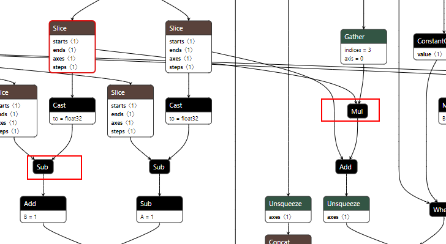
在deploy_model.onnx中搜索sub_6，可以看到slice和sub_6中间有个cast算子，slice的子节点为cast和mul_6，在amct中sub_6和mul_6算子不是兄弟节点。
图 2 cnn_net_tree_parser.dot和quant_param_record.txt

从atc生成的cnn_net_tree_parser.dot转的pdf图模型中可以看到cast算子被融合掉，导致sub_6和mul_6算子变成了兄弟节点，此时amct生成的quant_param_record.txt中，sub_6算子为s8量化，而mul_6算子为fp16，兄弟节点量化系数不一致导致atc报错。
解决：
- 在config.json中将sub_6的量化开关关掉，此时sub_6和mul_6算子均不量化，数据类型均为fp16。
- cast算子在pytorch中是类型转换操作，有可能是fp32转fp32，属于无效算子，建议手动修改模型的代码，从源头消除cast算子。
以上问题，在其他结构中也可能出现，大部分都是atc融合导致，建议对比deploy_model.onnx和atc生成的dot图模型，结合quant_param_record.txt量化系数，通过修改config.json和模型结构来处理。
找不到dot文件
报错信息：FileNotFoundError: [Errno 2] No such file or directory: 'dot': 'dot'
报错原因：缺少graphviz工具。
解决方案：sudo apt-get install graphviz
ModuleNotFoundError: No module named 'wheel' or No module named 'torch'
报错原因：缺少wheel或torch安装包
解决方法：使用“pip list”查看python开发环境中，是否有wheel和torch。如果缺少wheel，则使用“pip install wheel”命令进行安装。如果缺少torch，参考安装依赖中关于pytorch的安装。
libcudart.so.*: cannot open shared object file: No such file or directory
报错原因：amct和picovision基于某一个版本的cuda进行编译，依赖了cuda的部分so包。
解决方法：1、按照环境准备指导安装CUDA toolkit，2、保证torch的cuda版本和amct或picovision的cuda版本一致，如果不一致，先卸载torch、amct或picovision，然后安装对应版本的torch，再安装和torch的cuda版本一致的amct或picovision。
注意：Hi3516CV610的amct和picovision基于torch2.1.0+cu121进行编译的，对应amct的cu122的版本。
mamtul第二路值域较宽导致掉点问题
掉点原因：MatMul 算子第二路仅能执行8bit对称量化，当第二路浮点输入的范围值域较大（比如：-30.6857~12.2666），量化到int8(-128~127)，会导致scale值较大，从而产生较大量化误差较大。
解决方法： 将该mamtul的左右输入调换，使第一路进行做高精度量化，示例如下：
import torch
A = torch.randn(1, 3, 3)
B = torch.randn(1, 3, 3)
assert torch.all(torch.matmul(A, B) == (torch.matmul(B.permute(0, 2, 1), A.permute(0, 2, 1))).permute(0, 2, 1))
共享卷积导致精度掉点
附录
支持量化的算子列表
训练后量化，支持量化的层以及约束如下：
表 1 量化支持的层以及约束
|
|||
|
|||
|
|||
静态图简易量化配置功能说明
-
静态图简易量化配置功能支持用户通过自定义yaml格式文件生成量化配置，提供简易量化配置yaml文件示例内容如下（用户可根据需求自定义修改）。
# Layer name not to be quantized skip_layers: [] # om.json generated from model convert for config calibration # om_config: mapping_file: "./om_json/resnet50.om.json" # default config common_config: { weight_quant_params: { quantizer: "ArqWeightFakeQuantize", quantizer_args: { observer: "ArqObserver", num_bits: 8, } }, activation_quant_params: { quantizer: "UlqFakeQuantize", quantizer_args: { num_bits: 8, observer: "IFMRObserver", } } } # layer config user defined for overriding override_layer_configs: [ { layer_name: "fc", weight_quant_params: { quantizer: "ArqWeightFakeQuantize", quantizer_args: { observer: "ArqObserver", num_bits: 8, channel_wise: false } }, activation_quant_params: { quantizer: "UlqFakeQuantize", quantizer_args: { num_bits: 8, observer: "IFMRObserver", } } }, { # User-defined or third-party quantization algorithm layer_name: "conv1", weight_quant_params: { quantizer: "torch.quantization.FakeQuantize", quantizer_args: { observer: "torch.quantization.PerChannelMinMaxObserver", quant_min: -128, quant_max: 127, dtype: "torch.qint8", qscheme: "torch.per_channel_symmetric", reduce_range: false, ch_axis: 0 } }, activation_quant_params: { quantizer: "torch.quantization.FakeQuantize", quantizer_args: { observer: "torch.quantization.MovingAverageMinMaxObserver", quant_min: -128, quant_max: 127, dtype: "torch.qint8", qscheme: "torch.per_tensor_affine", reduce_range: false } } } ] # layer config by types user defined for overriding override_layer_types: [ { layer_type: "torch.nn.MaxPool2d", activation_quant_params: { quantizer: "LuqActivationFakeQuantize", quantizer_args: { num_bits: 8, observer: "LuqMseObserver" } } }, { layer_type: ["torch.cat", "torch.nn.AvgPool2d"], } ]表 1 静态图简易量化配置参数说明
Mindcmd工具一键比对功能，基于已生成的模型进行模型转换时会生成一个以.om.json为后缀的文件，其中包含各层输入的量化位宽等信息，一键比对指定--realquant参数，Mindcmd工具将该文件配置在mapping_file中，重新生成config.json，支持eltwise_add层的处理，支持torch.nn.Conv2d按输入和权重的输入通道做L0c的切分处理（仅Hi3516CV610支持）。
- 取值为true时量化
- 取值为false时不量化
- 默认为true
从mapping_file中解析出来的L0c切分步长，该参数不存在时默认不切分。l0c切分主要应用于精度要求较高的像素级网络，做了L0c切分的算子的realquant和仿真的余弦相似度为1和最大绝对误差为0时，达到比特一致。当前仅支持torch.nn.Conv2d算子。
observer对应量化过程中的calibration场景，其对应不同类型的算法，算法详情参见observer算法。
- 取值为true时，每个channel独立量化，量化因子不同。
- 取值为false时，所有channel同时量化，共享同一个量化因子。
- 取值为true时量化
- 取值为false时不量化
- 默认为true
- 取值为true时量化
- 取值为false时不量化
- 默认为true
-
对于既有json格式的简易量化配置内容，为减少手动构造配置文件的工作量，可以通过yaml包的dump方法保存为yaml格式文件，供量化工具接口读取，示例如下：
import yaml def trans(): fx_quant = { "skip_layers": [], "override_layer_configs": [ { "layer_name": "fc", "weight_quant_params": { "quantizer": "ArqWeightFakeQuantize", "quantizer_args": { "observer": "ArqObserver", "num_bits": 8, "channel_wise": False } }, "activation_quant_params": { "quantizer": "UlqFakeQuantize", "quantizer_args": { "observer": "IFMRObserver", "num_bits": 12 } } } ] } with open('./test.yaml', 'w', encoding="utf-8") as f: yaml.dump(fx_quant, f, sort_keys=False) if __name__=='__main__': trans()保存得到yaml格式简易量化配置文件内容如下：
-
Linear算子和matmul做perchannel量化简易量化配置示例：
override_layer_types: [ { 'layer_type': [ "torch.nn.Linear" ], 'weight_quant_params': { 'quantizer_args': { "channel_wise": true } }, }, { 'layer_type': [ "torch.matmul", "matmul", "operator.matmul" ], 'weight_quant_params': { 'quantizer_args': { "channel_wise": true # 当matmul第二路为离线输入时，才会做perchannel量化，否则还是pertensor量化。 } }, }, ] override_layer_configs: [ { layer_name: "fc1", weight_quant_params: { quantizer_args: { channel_wise: true } }, }, { layer_name: "matmul_1", weight_quant_params: { quantizer_args: { channel_wise: true } }, } ]
cube only 量化
仅量化CUBE算子（Conv2d、ConvTranspose2d、Linear、matmul和pooling系列算子），可以减少量化误差，但性能会相应降低，带宽会相应提高，推荐在全网8bit PTQ量化误差较大时使用。
- cube_only_8bit.yaml，cube only 8bit量化配置。
common_config: # 全局量化算法配置
quant_enable: false # 是否量化
weight_quant_params: # 权重量化配置参数
quantizer: ArqWeightFakeQuantize # 权重量化算法
activation_quant_params: # 数据量化配置参数
quantizer: UlqFakeQuantize # 数据量化算法
override_layer_types: # 根据算子类型设置量化算法
- layer_type: # cube算子
- torch.nn.Conv2d
- torch.nn.ConvTranspose2d
weight_quant_params:
quantizer: ArqWeightFakeQuantize
quantizer_args: # 权重量化算法参数
observer: ArqObserver # 权重校准算法
num_bits: 8 # 量化位宽
activation_quant_params:
quantizer: UlqFakeQuantize # 数据量化算法
quantizer_args: # 数据量化算法参数
observer: IFMRObserver # 数据校准算法
num_bits: 8 # 位宽
- layer_type: # cube算子
- torch.nn.Linear
weight_quant_params:
quantizer: ArqWeightFakeQuantize
quantizer_args: # 权重量化算法参数
observer: ArqObserver # 权重校准算法
num_bits: 8 # 量化位宽
activation_quant_params:
quantizer_args: # 数据量化算法参数
observer: IFMRObserver # 数据校准算法
num_bits: 8 # 位宽
- layer_type: # matmul算子
- torch.matmul
- operator.matmul
- matmul
activation_quant_params:
- quantizer: LuqActivationFakeQuantize
quantizer_args:
observer: IFMRObserver
num_bits: 8
batch_num: 1
qscheme: symmetric # 对称量化
with_offset: false # 对称量化
- quantizer: LuqActivationFakeQuantize
quantizer_args:
observer: IFMRObserver
num_bits: 8 # matmul算子的第二路默认为权重，不支持高精。
batch_num: 1
qscheme: symmetric
with_offset: false
- layer_type: # pooling算子
- torch.nn.MaxPool2d
- torch.nn.AdaptiveMaxPool2d
- torch.nn.functional.max_pool2d
- torch.nn.functional.max_pool2d_with_indices
- torch.nn.functional.adaptive_max_pool2d
- torch.nn.functional.adaptive_max_pool2d_with_indices
- torch.nn.functional.adaptive_avg_pool2d
- torch.nn.AdaptiveAvgPool2d
- torch.nn.AvgPool2d
- torch.nn.functional.avg_pool2d
activation_quant_params:
quantizer: UlqFakeQuantize
quantizer_args:
observer: IFMRObserver
num_bits: 8
override_layer_configs: # 指定算子名设置量化配置参数
- layer_name: []
weight_quant_params:
quantizer: ArqWeightFakeQuantize
quantizer_args:
observer: ArqObserver
num_bits: 8 # 权重仅支持4和8bit量化
channel_wise: true # True：perchannel量化，False：pertensor量化
eps: 0.000000119209290 # 权重scale的最小截断值，当bias大于6.4031265时，自动增大eps为0.00000763312164，防止bias溢出。
activation_quant_params:
quantizer: UlqFakeQuantize
quantizer_args:
num_bits: 16 # 高精[9-16], 对应芯片中类型S16
observer: IFMRObserver
## skip_layers: # 指定算子名跳过量化，算子名可在deploy.onnx、quant.json、float.svg和quant.svg中找到。
## - add
## - add_1
- cube_only_12bit.yaml，cube only 12bit量化配置。
common_config: # 全局量化算法配置
quant_enable: false # 是否量化
weight_quant_params: # 权重量化配置参数
quantizer: ArqWeightFakeQuantize # 权重量化算法
activation_quant_params: # 数据量化配置参数
quantizer: UlqFakeQuantize # 数据量化算法
override_layer_types: # 根据算子类型设置量化算法
- layer_type: # cube算子
- torch.nn.Conv2d
- torch.nn.ConvTranspose2d
weight_quant_params:
quantizer: ArqWeightFakeQuantize
quantizer_args: # 权重量化算法参数
observer: ArqObserver # 权重校准算法
num_bits: 8 # 量化位宽
activation_quant_params:
quantizer: UlqFakeQuantize # 数据量化算法
quantizer_args: # 数据量化算法参数
observer: IFMRObserver # 数据校准算法
num_bits: 12 # 位宽
- layer_type: # cube算子
- torch.nn.Linear
weight_quant_params:
quantizer: ArqWeightFakeQuantize
quantizer_args: # 权重量化算法参数
observer: ArqObserver # 权重校准算法
num_bits: 8 # 量化位宽
activation_quant_params:
quantizer_args: # 数据量化算法参数
observer: IFMRObserver # 数据校准算法
num_bits: 12 # 位宽
- layer_type: # matmul算子
- torch.matmul
- operator.matmul
- matmul
activation_quant_params:
- quantizer: LuqActivationFakeQuantize
quantizer_args:
observer: IFMRObserver
num_bits: 12
batch_num: 1
qscheme: symmetric # 对称量化
with_offset: false # 对称量化
- quantizer: LuqActivationFakeQuantize
quantizer_args:
observer: IFMRObserver
num_bits: 8 # matmul算子的第二路默认为权重，不支持高精。
batch_num: 1
qscheme: symmetric
with_offset: false
- layer_type: # pooling算子
- torch.nn.MaxPool2d
- torch.nn.AdaptiveMaxPool2d
- torch.nn.functional.max_pool2d
- torch.nn.functional.max_pool2d_with_indices
- torch.nn.functional.adaptive_max_pool2d
- torch.nn.functional.adaptive_max_pool2d_with_indices
- torch.nn.functional.adaptive_avg_pool2d
- torch.nn.AdaptiveAvgPool2d
- torch.nn.AvgPool2d
- torch.nn.functional.avg_pool2d
activation_quant_params:
quantizer: UlqFakeQuantize
quantizer_args:
observer: IFMRObserver
num_bits: 12
override_layer_configs: # 指定算子名设置量化配置参数
- layer_name: []
weight_quant_params:
quantizer: ArqWeightFakeQuantize
quantizer_args:
observer: ArqObserver
num_bits: 8 # 权重仅支持4和8bit量化
channel_wise: true # True：perchannel量化，False：pertensor量化
eps: 0.000000119209290 # 权重scale的最小截断值，当bias大于6.4031265时，自动增大eps为0.00000763312164，防止bias溢出。
activation_quant_params:
quantizer: UlqFakeQuantize
quantizer_args:
num_bits: 12 # 高精[9-16], 对应芯片中类型S16
observer: IFMRObserver
## skip_layers: # 指定算子名跳过量化，算子名可在deploy.onnx、quant.json、float.svg和quant.svg中找到。
## - add
## - add_1
使用方法：
- 通过mindcmd oneclick 指定命令行参数 --quant_config cube_only_8bit.yaml。
- 通过create_quant_config_fx函数传入参数config_definition=r'cube_only_8bit.yaml'。
误差分析功能的使用介绍
-
使用mindcmd进行误差分析：
示例：
model.py # 模型所在python文件
import torch class Model(torch.nn.Module): def __init__(self, *args, **kwargs): super().__init__() self.conv = torch.nn.Conv2d(3, 3, 1) def forward(self, x): x = self.conv(x) return x def load_pytorch_model(): # 模型实例化，可以加载浮点权重、一些自定义处理等操作 model = Model(args, kwargs) model.eval() ckpt = torch.load(r'ckpt.pt', map_location='cpu') model.load_state_dict(ckpt) return modelmindcmd 一键比对：
# 将上面的model.py所在文件夹路径设置为python的导包路径 export PYTHONPATH=dirpath:$PYTHONPATH # 打开mindcmd.ini的IS_QUANT_ANALYSIS_OPEN mindcmd config -g is_quant_analysis_open=1 注意：误差分析功能仅支持模型的输出的类型为List[torch.Tensor, torch.Tensor]、Tuple(torch.Tensor, torch.Tensor)和torch.Tensor, torch.Tensor # mindcmd 一键推理，更多参数请查阅《MindCmd 使用指南》一键推理章节 mkdir ./save_dir mindcmd oneclick -k ./save_dir pytorch -m model.load_pytorch_model -w quant_model_ckpt.pt --quant_config quant_config.json --input_shape 1,3,64,64 -i input.npy --realquant # 执行完成之后，会在workspace中./*/output/latest_result/amct/pytorch/quant_analyzer生成三份分析报告 # layerwise_analysis_report.html：分析网络中单独的量化层对网络输出的影响情况 # graphwise_analysis_report.html：分析网络中的每层的fakequant和realquant输出分别对浮点的余弦相似度情况 # statistic_analysis_report.html：统计每一层量化前后的输出以及权重的统计分布情况和可视化直方图 # workspace中./*/output/latest_result/dump中有模型每一层输出的比对结果。 -
手动调用amct误差分析接口：
import torchvision model = torchvision.models.resnet50(pretrained=True) model.eval() # 加载已量化的模型 quant_model = amct.restore_quant_model_fx('quant_config.json', model, "quant_model_ckpt.pt") # 1、可以对已量化的模型进行分析 quant_analyzer = amct.QuantAnalyzer(quant_model, inputs, save_dir) quant_analyzer.analyze() # 2、可以对未量化的模型进行分析 quant_analyzer = amct.QuantAnalyzer(model, inputs, save_dir) quant_analyzer.analyze() # 执行完成之后会在save_dir中生成分析报告，详细请参考“[量化误差分析](#ZH-CN_TOPIC_0000001847125189)”章节。
量化因子记录文件说明
量化因子记录文件格式说明
量化因子record文件格式，为基于protobuf协议的序列化数据结构文件，其对应的protobuf原型定义为（或查看_AMCT安装目录_/hotwheels/amct_pytorch/proto/scale_offset_record_pytorch.proto文件）：
syntax = "proto2";
package AMCTPytorchProto;
message ActivationQuantParam
{
required float scale_d = 1;
required int32 offset_d = 2;
required int32 index = 3;
optional int32 num_bits_d = 9;
}
message SingleLayerRecord {
repeated ActivationQuantParam record_d = 1;
repeated float scale_w = 3;
repeated int32 offset_w = 4;
repeated uint32 shift_bit = 5;
optional int32 num_bits_w = 6;
optional bool skip_fusion = 9 [default = false];
repeated int32 params = 10;
repeated float centroids = 11;
optional float weight_clip_max = 12;
}
message MapFiledEntry {
optional string key = 1;
optional SingleLayerRecord value = 2;
}
message ScaleOffsetRecord {
repeated MapFiledEntry record = 1;
参数说明如下：
对于optional字段，由于protobuf协议未对重复出现的值报错，而是采用覆盖处理，因此出现重复配置的optional字段内容时会默认保留最后一次配置的值，需要用户自己保证文件的正确性。
对于一般量化层需要配置包含scale_d、offset_d、scale_w、offset_w、shift_bit参数，量化因子record文件格式参考示例如下：
record {
key: "conv1"
value {
scale_d: 0.0798481479
offset_d: 1
scale_w: 0.00297622895
offset_w: 0
shift_bit: 1
skip_fusion: true
}
}
record {
key: "fc"
value {
record_d {
scale_d: 0.016266866
offset_d: -128
index: 0
num_bits_d: 8
}
scale_w: 0.00089841383
offset_w: 0
num_bits_w: 4
params: -85
params: -59
params: -45
centroids: -0.65496659
centroids: -0.45462388
centroids: -0.34674704
weight_clip_max: 3.6236975
量化因子说明
对于量化层数据和权重分别需要提供量化因子scale（浮点数的缩放因子），offset（偏移量）两项，AMCT采用的是统一的量化数据格式，参考如下，其应用表达式为：
支持的取值范围为：
量化通常分为对称量化算法、非对称量化算法两类：
-
对称量化算法原理：
原始高精度数据和量化后int8数据的转换为：
 ，其中scale是float32的浮点数，为了能够表示正负数，
，其中scale是float32的浮点数，为了能够表示正负数， 采用signed int8的数据类型，通过原始高精度数据转换到int8数据的操作如下，其中round为取整函数，量化算法需要确定的数值即为常数scale：
采用signed int8的数据类型，通过原始高精度数据转换到int8数据的操作如下，其中round为取整函数，量化算法需要确定的数值即为常数scale：
对权值和数据的量化可以归结为寻找scale的过程，由于
 为有符号数，要保证正负数值表示范围的对称性，因此对所有数据首先进行取绝对值的操作，使待量化数据的范围变换为
为有符号数，要保证正负数值表示范围的对称性，因此对所有数据首先进行取绝对值的操作，使待量化数据的范围变换为 ，再来确定_scale_。由于INT8在正数范围内能表示的数值范围为[0,127]，因此_scale_可以通过如下方式计算得到：
，再来确定_scale_。由于INT8在正数范围内能表示的数值范围为[0,127]，因此_scale_可以通过如下方式计算得到：
确定了_scale_之后，INT8数据对应的表示范围为
 ，量化操作即为对量化数据以进行饱和，即超过范围的数据饱和到边界值，然后进行公式所示量化操作即可。
，量化操作即为对量化数据以进行饱和，即超过范围的数据饱和到边界值，然后进行公式所示量化操作即可。 -
非对称量化算法原理：
与对称量化算法主要区别在于数据转换的方式不同，如下，同样需要确定_scale_与_offset_这两个常数。
确定后通过原始高精度数据计算得到UINT8数据的转换，即为如下公式所示：

其中，scale是FP32浮点数，为unsigned INT8定点数，offset是INT8定点数。其表示的数据范围为。若待量化数据的取值范围为，则scale和offset的计算方式如下：
，
量化数据格式统一：通过将非对称量化公式进行简单的数据变换，可以使得量化后的数据与对称量化算法在数据格式上保持一致，均为int格式。具体变换过程如下：
以int8量化为例进行说明，公式符号与之前保持一致，输入原始高精度浮点数据为
 ，原始量化后的定点数为，量化scale，原始量化（算法要求强制过零点，否则可能会出现精度问题），原始量化的计算原理公式如下：
，原始量化后的定点数为，量化scale，原始量化（算法要求强制过零点，否则可能会出现精度问题），原始量化的计算原理公式如下：其中
 。通过上述变换，可以将量化数据也转成int8格式。确定scale和变换后的offset'后，通过原始高精度浮点数据计算得到INT8数据的转换即为如下公式所示：
。通过上述变换，可以将量化数据也转成int8格式。确定scale和变换后的offset'后，通过原始高精度浮点数据计算得到INT8数据的转换即为如下公式所示：
Hi3519DV500 安装Python3.7.5（Ubuntu）
-
检查系统是否安装python3.7.5开发环境。
分别使用命令python3.7.5 --version、python3.7 --version、pip3.7.5 --version、pip3.7 --version检查是否已经安装，如果返回如下信息则说明已经安装，否则请参见下一步。
-
安装python3.7.5依赖的包。
sudo apt-get install -y make zlib1g zlib1g-dev build-essential libbz2-dev libsqlite3-dev libssl-dev libxslt1-dev libffi-dev openssl python3-tklibsqlite3-dev需要在python安装之前安装，如果用户操作系统已经安装python3.7.5环境，在此之后再安装libsqlite3-dev，则需要重新编译python环境。如果安装python3-tk失败，请参见安装python3-tk时提示错误信息。
-
安装python3.7.5。
-
使用wget下载python3.7.5源码包，可以下载到AMCT所在服务器任意目录，命令为：
-
进入下载后的目录，解压源码包，命令为：
-
进入解压后的文件夹，执行配置、编译和安装命令：
cd Python-3.7.5 ./configure --prefix=/usr/local/python3.7.5 --enable-loadable-sqlite-extensions --enable-shared make sudo make install其中“--prefix”参数用于指定python安装路径，用户根据实际情况进行修改，“--enable-shared”参数用于编译出libpython3.7m.so.1.0动态库，“--enable-loadable-sqlite-extensions”参数用于加载sqlite-devel依赖。
本手册以--prefix=/usr/local/python3.7.5路径为例进行说明。执行配置、编译和安装命令后，安装包在/usr/local/python3.7.5路径，libpython3.7m.so.1.0动态库在/usr/local/python3.7.5/lib/libpython3.7m.so.1.0路径。
-
执行如下命令设置软链接：
-
设置python3.7.5环境变量。
-
如果python安装用户为root：
该场景下AMCT使用root用户进行安装，请在当前终端窗口直接执行如下命令设置环境变量。
#用于设置python3.7.5库文件路径 export LD_LIBRARY_PATH=/usr/local/python3.7.5/lib:$LD_LIBRARY_PATH #如果用户环境存在多个python3版本，则指定使用python3.7.5版本 export PATH=/usr/local/python3.7.5/bin:$PATH 须知：
运行用户是root，不建议修改.bashrc，否则可能会影响其它系统提供的python工具的使用，如果仍想使用系统默认工具，则请重新开启终端窗口。
-
-
如果python安装用户为非root：
该场景下AMCT使用非root用户进行安装，请以非root用户在任意目录下执行vi ~/.bashrc命令，打开.bashrc文件，在文件最后一行后面添加如下内容。
#用于设置python3.7.5库文件路径 export LD_LIBRARY_PATH=/usr/local/python3.7.5/lib:$LD_LIBRARY_PATH #如果用户环境存在多个python3版本，则指定使用python3.7.5版本 export PATH=/usr/local/python3.7.5/bin:$PATH执行:wq!命令保存文件并退出，执行source ~/.bashrc命令使其立即生效。
-
-
安装完成之后，执行如下命令查看安装版本，如果返回相关版本信息，则说明安装成功。
Hi3516CV610 安装Python3.9.11（Ubuntu）
-
检查系统是否安装python3.9.11开发环境。
分别使用命令python3.9.11 --version、python3.9 --version、pip3.9.11 --version、pip3.9 --version检查是否已经安装，如果返回如下信息则说明已经安装，否则请参见下一步。
-
安装python3.9.11依赖的包。
-
安装python3.9.11。
-
使用wget下载python3.9.11源码包，可以下载到AMCT所在服务器任意目录，命令为：
-
进入下载后的目录，解压源码包，命令为：
-
进入解压后的文件夹，执行配置、编译和安装命令：
cd Python-3.9.11 ./configure --prefix=/usr/local/python3.9.11 --enable-optimizations --enable-shared make -j 4 sudo make altinstall其中"--prefix": 参数用于指定python安装路径，用户根据实际情况进行修改，"enable-optimizations": 启用优化选项，提高 Python 执行效率，"--enable-share": 启用共享库编译选项，生成共享库文件。
-
执行如下命令设置软链接：
-
设置python3.9.11环境变量。
-
如果python安装用户为root：
该场景下AMCT使用root用户进行安装，请在当前终端窗口直接执行如下命令设置环境变量。
#用于设置python3.9.11库文件路径 export LD_LIBRARY_PATH=/usr/local/python3.9.11/lib:$LD_LIBRARY_PATH #如果用户环境存在多个python3版本，则指定使用python3.9.11版本 export PATH=/usr/local/python3.9.11/bin:$PATH 须知：
如果运行用户是root，不建议修改.bashrc，否则可能会影响其它系统提供的python工具的使用，如果仍想使用系统默认工具，则请重新开启终端窗口。 -
如果python安装用户为非root：
该场景下AMCT使用非root用户进行安装，请以非root用户在任意目录下执行vi ~/.bashrc命令，打开.bashrc文件，在文件最后一行后面添加如下内容。
#用于设置python3.9.11库文件路径 export LD_LIBRARY_PATH=/usr/local/python3.9.11/lib:$LD_LIBRARY_PATH #如果用户环境存在多个python3版本，则指定使用python3.9.11版本 export PATH=/usr/local/python3.9.11/bin:$PATH执行:wq!命令保存文件并退出，执行source ~/.bashrc命令使其立即生效。
-
-
-
安装完成之后，执行如下命令查看安装版本，如果返回相关版本信息，则说明安装成功。
dot图可视化
使用python工具将atc生成dot可视化。
demo：
## dot2pdf.py
import glob
import sys
import os.path
from graphviz import Source # pip install graphviz
def dot2pdf(dot_path):
if os.path.isfile(dot_path) and dot_path.endswith(".dot"):
dot_paths = [dot_path]
elif os.path.isdir(dot_path):
dot_paths = list(glob.glob(f'{dot_path}/*.dot'))
else:
raise FileNotFoundError
if len(dot_paths) == 0:
raise FileNotFoundError
for dot_path in dot_paths:
with open(dot_path) as f:
dot_data = f.read()
graph = Source(dot_data)
output = os.path.splitext(dot_path)[0]
graph.render(output, format="pdf", cleanup=True)
print('generated file {}.pdf successfully'.format(output))
if __name__ == '__main__':
dot_source = sys.argv[1]
dot2pdf(dot_source)
执行命令：python dot2pdf.py your_dot_path